In this script, we carry out FLASH for systematic study of sex effect on gene expression.
library(ggplot2)
source("../code/FactorGGBar.R")
source("../code/flash_factor_postprocess.R")data <- get(load("../output/sex_cor_nonmash.rda"))
betahat <- data$betahat
sebetahat <- data$sebetahat
zdat <- betahat/sebetahatflash_out <- get(load("../output/sex_cor_flash.rda"))
common_samples <- get(load("../output/common_samples.rda"))
tissue_labels <- read.table(file = "../data/GTEX_V6/samples_id.txt")[,3]
gene_names <- as.character(read.table(file = "../data/GTEX_V6/gene_names_GTEX_V6.txt")[,1])
gene_names_1 <- as.character(sapply(gene_names, function(x) return(strsplit(x, "[.]")[[1]][1])))
U <- unique(tissue_labels)order_index <- c();
order_index <- c(order_index, grep("Brain", U))
order_index <- c(order_index, grep("fibroblast", U))
order_index <- c(order_index, grep("EBV", U))
order_index <- c(order_index, grep("Spleen", U))
order_index <- c(order_index, grep("Whole Blood", U))
order_index <- c(order_index, grep("Muscle - Skeletal", U))
order_index <- c(order_index, grep("Liver", U))
order_index <- c(order_index, grep("Pancreas", U))
order_index <- c(order_index, grep("Stomach", U))
order_index <- c(order_index, grep("Kidney - Cortex", U))
order_index <- c(order_index, grep("Adrenal Gland", U))
order_index <- c(order_index, grep("Colon - Transverse", U))
order_index <- c(order_index, grep("Small Intestine - Terminal Ileum", U))
order_index <- c(order_index, grep("Heart - Atrial Appendage", U))
order_index <- c(order_index, grep("Heart - Left Ventricle", U))
order_index <- c(order_index, grep("Minor Salivary Gland", U))
order_index <- c(order_index, grep("Skin - Sun Exposed", U))
order_index <- c(order_index, grep("Skin - Not Sun Exposed", U))
order_index <- c(order_index, grep("Lung", U))
order_index <- c(order_index, grep("Ovary", U))
order_index <- c(order_index, grep("Thyroid", U))
order_index <- c(order_index, grep("Pituitary", U))
order_index <- c(order_index, grep("Testis", U))
order_index <- c(order_index, grep("Nerve - Tibial", U))
order_index <- c(order_index, grep("Breast - Mammary Tissue", U))
order_index <- c(order_index, grep("Adipose - Visceral", U))
order_index <- c(order_index, grep("Adipose - Subcutaneous", U))
order_index <- c(order_index, grep("Artery - Coronary", U))
order_index <- c(order_index, grep("Artery - Tibial", U))
order_index <- c(order_index, grep("Artery - Aorta", U))
order_index <- c(order_index, grep("Esophagus - Mucosa", U))
order_index <- c(order_index, grep("Vagina", U))
order_index <- c(order_index, grep("Cervix - Endocervix", U))
order_index <- c(order_index, grep("Esophagus - Gastroesophageal Junction", U))
order_index <- c(order_index, grep("Colon - Sigmoid", U))
order_index <- c(order_index, grep("Esophagus - Muscularis", U))
order_index <- c(order_index, grep("Cervix - Ectocervix", U))
order_index <- c(order_index, grep("Fallopian", U))
order_index <- c(order_index, grep("Prostate", U))
order_index <- c(order_index, grep("Uterus", U))
order_index <- c(order_index, grep("Bladder", U))loadings <- flash_out$l[order_index,]
rownames(loadings) <- 1:dim(flash_out$l)[1]
annotation <- data.frame(sample_id = 1:NROW(loadings),
label = factor(U[order_index], levels = U[order_index]))
FactorGGBar(loadings, annotation = annotation, panel=list(panel_rows=3))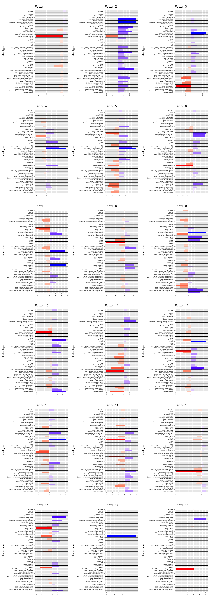
The proportion of variance explained by the factors are given by
postprocess <- flash_factor_postprocess(flash_out$l, flash_out$f, zdat)
100*postprocess$PVE## [1] 12.2154276 6.8362313 5.2168285 3.4981265 3.0047615 1.6481014
## [7] 1.1254515 0.9759808 0.7484518It seems that the first factor corresponds to a specific effect in Breast-mammary tissue. The second factor was high in everything else except the breast mammary tissue which is negative. Factor 3 is strong positive in the brain tissues and also negatively related to the adipose tissues. The 4th factor is mainly expressed in the skin tissues. It is not the case however that there are many tissue specific effects.
We look at how the factors look like? Are they sparse?
par(mfrow=c(2,2))
plot(flash_out$f[,1], ylab = "Factor 1")
plot(flash_out$f[,2], ylab = "Factor 2")
plot(flash_out$f[,3], ylab = "Factor 3")
plot(flash_out$f[,4], ylab = "Factor 4")
indices1 <- order(abs(flash_out$f[,1]), decreasing=TRUE)[1:50]
indices2 <- order(abs(flash_out$f[,2]), decreasing=TRUE)[1:50]
indices3 <- order(abs(flash_out$f[,3]), decreasing=TRUE)[1:50]
indices4 <- order(abs(flash_out$f[,4]), decreasing=TRUE)[1:50]
common_indices <- Reduce(intersect, list(indices1, indices2, indices3, indices4))
union_indices <- Reduce(union, list(indices1, indices2, indices3, indices4))
common_indices## [1] 13172 9897 14426union_indices## [1] 12236 13172 9897 6401 14426 6533 14263 1093 9710 11664 11667
## [12] 11658 14095 11656 4729 9075 1596 11661 4969 656 2241 11657
## [23] 1945 11665 9881 5580 2778 1307 11621 11512 1119 9711 11696
## [34] 6896 15660 2028 8926 13979 9005 1492 11663 3648 11738 1737
## [45] 7943 12079 8938 12186 2150 8877 2206 13721 11277 10476 5795
## [56] 11946 12870 6532 3388 6906 7351 6295 9445 6021 4686 13830
## [67] 4741 4559 4247 3502 1560 12262 10832 11409 9497 11019 10915
## [78] 7773 3713 2504 1388 12970 952 9105 8316 5401 13515 3336
## [89] 2162 5589 10046 4705 3200 7294 12160 3474 10822 1270 10717
## [100] 1831 7562 2170 4555 4544 15156 1171 155 11498 3140 14832
## [111] 5421 6655 4125 10236 7290 3314 626 959 11143 2619 8675
## [122] 9745 15460 4283 6891 10388 920 3366 3519 5983 13501 9632
## [133] 8824 1559 14002 7250 6456 9159 193 233 6727 10875 13761
## [144] 11144 7625 748 6334 15441 6009 10604 13676 7030 11836 2364
## [155] 7334 4077 13030 4458 798 7820 2657 10226 12474 4334 6109
## [166] 4 4627 6398 7797 8819 10635 4949 2916 5993 6712 2442
## [177] 1264 14141 4220 8705 1389The distribution of the z-scores for some of these genes are as follows.
par(mfrow=c(2,2))
plot(1:53, zdat[order_index,common_indices[1]], pch=20, type="b", xlab = "tissues", ylab="z scores")
text(1:53, zdat[order_index,common_indices[1]], U[order_index], cex=0.3)
plot(1:53, zdat[order_index,common_indices[2]], pch=20, type="b", xlab = "tissues", ylab="z scores")
text(1:53, zdat[order_index,common_indices[2]], U[order_index], cex=0.3)
plot(1:53, zdat[order_index,common_indices[3]], pch=20, type="b", xlab = "tissues", ylab="z scores")
text(1:53, zdat[order_index,common_indices[3]], U[order_index], cex=0.3)The genes in top 25 of the first cluster
par(mfrow=c(3,3))
for(m in 1:50){
plot(1:53, zdat[order_index,union_indices[m]], pch=20, type="b", xlab = "tissues", ylab="z scores")
text(1:53, zdat[order_index,union_indices[m]], U[order_index], cex=0.3)
}


 ## Factor 3
## Factor 3
indices <- order(abs(flash_out$f[,3]), decreasing=TRUE)[1:50]
par(mfrow=c(3,3))
for(m in 1:50){
plot(1:53, zdat[order_index,indices[m]], pch=20, type="b", xlab = "tissues", ylab="z scores")
text(1:53, zdat[order_index,indices[m]], U[order_index], cex=0.3)
}
indices <- order(abs(flash_out$f[,4]), decreasing=TRUE)[1:50]
par(mfrow=c(3,3))
for(m in 1:50){
plot(1:53, zdat[order_index,indices[m]], pch=20, type="b", xlab = "tissues", ylab="z scores")
text(1:53, zdat[order_index,indices[m]], U[order_index], cex=0.3)
}


indices <- order(abs(flash_out$f[,5]), decreasing=TRUE)[1:50]
par(mfrow=c(3,3))
for(m in 1:50){
plot(1:53, zdat[order_index,indices[m]], pch=20, type="b", xlab = "tissues", ylab="z scores")
text(1:53, zdat[order_index,indices[m]], U[order_index], cex=0.3)
}


indices <- order(abs(flash_out$f[,8]), decreasing=TRUE)[1:50]
par(mfrow=c(3,3))
for(m in 1:50){
plot(1:53, zdat[order_index,indices[m]], pch=20, type="b", xlab = "tissues", ylab="z scores")
text(1:53, zdat[order_index,indices[m]], U[order_index], cex=0.3)
}


We see there are some genes specifically correlated to sex in the Breast mammary tissue. Also, there are some genes that show enrichment with respect to the brain tissues, although one cannot call them brain specific. Apart from the breast mammary tissue and brain tissues, the other tissues of interest are thyroid and skin.
ash_data <- get(load("../output/sex_cor_ash.rda"))
lfdr_mat <- ash_data$post.lfsr
index <- grep("Breast", U)
lfdr_thresh <- apply(lfdr_mat, 2, function(x) {
if(x[index] < 0.05 && min(x[-index]) > 0.90){
y <- 1
}else{ y <- 0}
return(y)})The number of genes that satisfy this are
imp_genes_indices <- which(lfdr_thresh == 1)
imp_genes_names <- gene_names_1[imp_genes_indices]
imp_genes_names[1:10]## [1] "ENSG00000001631" "ENSG00000004139" "ENSG00000004399"
## [4] "ENSG00000005243" "ENSG00000005513" "ENSG00000005884"
## [7] "ENSG00000006210" "ENSG00000006831" "ENSG00000007545"
## [10] "ENSG00000008283"We look at the plot of the z-scores for the top 25 genes.
par(mfrow=c(3,3))
for(m in 1:25){
plot(1:53, zdat[order_index,imp_genes_indices[m]], pch=20, type="b", xlab = "tissues", ylab="z scores")
text(1:53, zdat[order_index,imp_genes_indices[m]], U[order_index], cex=0.3)
}
We save the genes in a list and do enrichment analysis of these genes.
write.table(imp_genes_names, file = "../utilities/sex_flash/breast_mammary.txt", quote = FALSE, row.names = FALSE, col.names = FALSE)
out <- mygene::queryMany(imp_genes_names[1:50], scopes="ensembl.gene", fields=c("name", "summary"), species="human");## Finishedcbind.data.frame(out$name, out$summary)## out$name
## 1 KRIT1, ankyrin repeat containing
## 2 sterile alpha and TIR motif containing 1
## 3 plexin D1
## 4 coatomer protein complex subunit zeta 2
## 5 SRY-box 8
## 6 integrin subunit alpha 3
## 7 C-X3-C motif chemokine ligand 1
## 8 adiponectin receptor 2
## 9 cramped chromatin regulator homolog 1
## 10 cytochrome b561
## 11 zinc finger protein 207
## 12 elongin A
## 13 Meckel syndrome, type 1
## 14 mbt domain containing 1
## 15 mitogen-activated protein kinase kinase kinase kinase 5
## 16 xylosyltransferase 2
## 17 neurochondrin
## 18 ZFP64 zinc finger protein
## 19 runt related transcription factor 3
## 20 solute carrier family 45 member 4
## 21 zinc finger protein 839
## 22 zinc finger DHHC-type containing 6
## 23 DEF6, guanine nucleotide exchange factor
## 24 ubiquitin protein ligase E3 component n-recognin 2
## 25 heat shock transcription factor 2
## 26 vimentin
## 27 ribonuclease T2
## 28 SH2 domain containing 2A
## 29 BCL2 associated transcription factor 1
## 30 transcription factor B1, mitochondrial
## 31 Rho GTPase activating protein 31
## 32 solute carrier family 4 member 7
## 33 thymosin beta 10
## 34 replication factor C subunit 1
## 35 zinc finger ZZ-type containing 3
## 36 methionine adenosyltransferase 2B
## 37 proteasome subunit alpha 4
## 38 tyrosyl-DNA phosphodiesterase 1
## 39 tRNA isopentenyltransferase 1
## 40 ubiquitin specific peptidase 28
## 41 collagen type IX alpha 2 chain
## 42 dickkopf WNT signaling pathway inhibitor 3
## 43 protease, serine 8
## 44 adaptor related protein complex 5 mu 1 subunit
## 45 anaphase promoting complex subunit 4
## 46 lymphocyte antigen 75
## 47 NOP58 ribonucleoprotein
## 48 PR/SET domain 1
## 49 sperm associated antigen 4
## 50 calponin 2
## out$summary
## 1 This gene encodes a protein containing four ankyrin repeats, a band 4.1/ezrin/radixin/moesin (FERM) domain, and multiple NPXY sequences. The encoded protein is localized in the nucleus and cytoplasm. It binds to integrin cytoplasmic domain-associated protein-1 alpha (ICAP1alpha), and plays a critical role in beta1-integrin-mediated cell proliferation. It associates with junction proteins and RAS-related protein 1A (Rap1A), which requires the encoded protein for maintaining the integrity of endothelial junctions. It is also a microtubule-associated protein and may play a role in microtubule targeting. Mutations in this gene result in cerebral cavernous malformations. Multiple alternatively spliced transcript variants have been found for this gene.
## 2 <NA>
## 3 <NA>
## 4 This gene encodes a member of the adaptor complexes small subunit family. The encoded protein is a subunit of the coatomer protein complex, a seven-subunit complex that functions in the formation of COPI-type, non-clathrin-coated vesicles. COPI vesicles function in the retrograde Golgi-to-ER transport of dilysine-tagged proteins.
## 5 This gene encodes a member of the SOX (SRY-related HMG-box) family of transcription factors involved in the regulation of embryonic development and in the determination of the cell fate. The encoded protein may act as a transcriptional activator after forming a protein complex with other proteins. This protein may be involved in brain development and function. Haploinsufficiency for this protein may contribute to the mental retardation found in haemoglobin H-related mental retardation (ART-16 syndrome).
## 6 The gene encodes a member of the integrin alpha chain family of proteins. Integrins are heterodimeric integral membrane proteins composed of an alpha chain and a beta chain that function as cell surface adhesion molecules. The encoded preproprotein is proteolytically processed to generate light and heavy chains that comprise the alpha 3 subunit. This subunit joins with a beta 1 subunit to form an integrin that interacts with extracellular matrix proteins including members of the laminin family. Expression of this gene may be correlated with breast cancer metastasis.
## 7 <NA>
## 8 The adiponectin receptors, ADIPOR1 (MIM 607945) and ADIPOR2, serve as receptors for globular and full-length adiponectin (MIM 605441) and mediate increased AMPK (see MIM 602739) and PPAR-alpha (PPARA; MIM 170998) ligand activities, as well as fatty acid oxidation and glucose uptake by adiponectin (Yamauchi et al., 2003 [PubMed 12802337]).
## 9 <NA>
## 10 <NA>
## 11 <NA>
## 12 This gene encodes the protein elongin A, which is a subunit of the transcription factor B (SIII) complex. The SIII complex is composed of elongins A/A2, B and C. It activates elongation by RNA polymerase II by suppressing transient pausing of the polymerase at many sites within transcription units. Elongin A functions as the transcriptionally active component of the SIII complex, whereas elongins B and C are regulatory subunits. Elongin A2 is specifically expressed in the testis, and capable of forming a stable complex with elongins B and C. The von Hippel-Lindau tumor suppressor protein binds to elongins B and C, and thereby inhibits transcription elongation.
## 13 The protein encoded by this gene localizes to the basal body and is required for formation of the primary cilium in ciliated epithelial cells. Mutations in this gene result in Meckel syndrome type 1 and in Bardet-Biedl syndrome type 13. Multiple transcript variants encoding different isoforms have been found for this gene.
## 14 <NA>
## 15 This gene encodes a member of the serine/threonine protein kinase family, that is highly similar to yeast SPS1/STE20 kinase. Yeast SPS1/STE20 functions near the beginning of the MAP kinase signal cascades that is essential for yeast pheromone response. This kinase was shown to activate Jun kinase in mammalian cells, which suggested a role in stress response. Two alternatively spliced transcript variants encoding the same protein have been described for this gene.
## 16 The protein encoded by this gene is an isoform of xylosyltransferase, which belongs to a family of glycosyltransferases. This enzyme transfers xylose from UDP-xylose to specific serine residues of the core protein and initiates the biosynthesis of glycosaminoglycan chains in proteoglycans including chondroitin sulfate, heparan sulfate, heparin and dermatan sulfate. The enzyme activity, which is increased in scleroderma patients, is a diagnostic marker for the determination of sclerotic activity in systemic sclerosis. Alternatively spliced transcript variants have been found for this gene.
## 17 This gene encodes a leucine-rich cytoplasmic protein, which is highly similar to a mouse protein that negatively regulates Ca/calmodulin-dependent protein kinase II phosphorylation and may be essential for spatial learning processes. Several alternatively spliced transcript variants of this gene have been described.
## 18 <NA>
## 19 This gene encodes a member of the runt domain-containing family of transcription factors. A heterodimer of this protein and a beta subunit forms a complex that binds to the core DNA sequence 5'-PYGPYGGT-3' found in a number of enhancers and promoters, and can either activate or suppress transcription. It also interacts with other transcription factors. It functions as a tumor suppressor, and the gene is frequently deleted or transcriptionally silenced in cancer. Alternative splicing results in multiple transcript variants.
## 20 <NA>
## 21 <NA>
## 22 <NA>
## 23 DEF6, or IBP, is a guanine nucleotide exchange factor (GEF) for RAC (MIM 602048) and CDC42 (MIM 116952) that is highly expressed in B and T cells (Gupta et al., 2003 [PubMed 12923183]).
## 24 This gene encodes an E3 ubiquitin ligase of the N-end rule proteolytic pathway that targets proteins with destabilizing N-terminal residues for polyubiquitylation and proteasome-mediated degradation. Alternative splicing results in multiple transcript variants.
## 25 The protein encoded by this gene belongs to the HSF family of transcription factors that bind specifically to the heat-shock promoter element and activate transcription. Heat shock transcription factors activate heat-shock response genes under conditions of heat or other stresses. Alternatively spliced transcript variants encoding different isoforms have been found for this gene.
## 26 This gene encodes a member of the intermediate filament family. Intermediate filamentents, along with microtubules and actin microfilaments, make up the cytoskeleton. The protein encoded by this gene is responsible for maintaining cell shape, integrity of the cytoplasm, and stabilizing cytoskeletal interactions. It is also involved in the immune response, and controls the transport of low-density lipoprotein (LDL)-derived cholesterol from a lysosome to the site of esterification. It functions as an organizer of a number of critical proteins involved in attachment, migration, and cell signaling. Mutations in this gene causes a dominant, pulverulent cataract.
## 27 This ribonuclease gene is a novel member of the Rh/T2/S-glycoprotein class of extracellular ribonucleases. It is a single copy gene that maps to 6q27, a region associated with human malignancies and chromosomal rearrangement.
## 28 This gene encodes an adaptor protein thought to function in T-cell signal transduction. A related protein in mouse is responsible for the activation of lymphocyte-specific protein-tyrosine kinase and functions in downstream signaling. Alternative splicing results in multiple transcript variants.
## 29 This gene encodes a transcriptional repressor that interacts with several members of the BCL2 family of proteins. Overexpression of this protein induces apoptosis, which can be suppressed by co-expression of BCL2 proteins. The protein localizes to dot-like structures throughout the nucleus, and redistributes to a zone near the nuclear envelope in cells undergoing apoptosis. Multiple transcript variants encoding different isoforms have been found for this gene.
## 30 The protein encoded by this gene is a dimethyltransferase that methylates the conserved stem loop of mitochondrial 12S rRNA. The encoded protein also is part of the basal mitochondrial transcription complex and is necessary for mitochondrial gene expression. The methylation and transcriptional activities of this protein are independent of one another. Variations in this gene may influence the severity of aminoglycoside-induced deafness (AID).
## 31 This gene encodes a GTPase-activating protein (GAP). A variety of cellular processes are regulated by Rho GTPases which cycle between an inactive form bound to GDP and an active form bound to GTP. This cycling between inactive and active forms is regulated by guanine nucleotide exchange factors and GAPs. The encoded protein is a GAP shown to regulate two GTPases involved in protein trafficking and cell growth.
## 32 This locus encodes a sodium bicarbonate cotransporter. The encoded transmembrane protein appears to transport sodium and bicarbonate ions in a 1:1 ratio, and is thus considered an electroneutral cotransporter. The encoded protein likely plays a critical role in regulation of intracellular pH involved in visual and auditory sensory transmission. Alternatively spliced transcript variants encoding distinct isoforms have been described.
## 33 <NA>
## 34 This gene encodes the large subunit of replication factor C, a five subunit DNA polymerase accessory protein, which is a DNA-dependent ATPase required for eukaryotic DNA replication and repair. The large subunit acts as an activator of DNA polymerases, binds to the 3' end of primers, and promotes coordinated synthesis of both strands. It may also have a role in telomere stability. Alternatively spliced transcript variants encoding different isoforms have been noted for this gene.
## 35 <NA>
## 36 The protein encoded by this gene belongs to the methionine adenosyltransferase (MAT) family. MAT catalyzes the biosynthesis of S-adenosylmethionine from methionine and ATP. This protein is the regulatory beta subunit of MAT. Alternative splicing results in multiple transcript variants encoding different isoforms.
## 37 This gene encodes a core alpha subunit of the 20S proteosome, which is a highly ordered ring-shaped structure composed of four rings of 28 non-identical subunits. Proteasomes cleave peptides in an ATP- and ubiquitin-dependent manner.
## 38 The protein encoded by this gene is involved in repairing stalled topoisomerase I-DNA complexes by catalyzing the hydrolysis of the phosphodiester bond between the tyrosine residue of topoisomerase I and the 3-prime phosphate of DNA. This protein may also remove glycolate from single-stranded DNA containing 3-prime phosphoglycolate, suggesting a role in repair of free-radical mediated DNA double-strand breaks. This gene is a member of the phospholipase D family and contains two PLD phosphodiesterase domains. Mutations in this gene are associated with the disease spinocerebellar ataxia with axonal neuropathy (SCAN1).
## 39 This gene encodes a protein that that is targeted to the mitochondrion and modifies transfer RNAs (tRNAs) by adding a dimethylallyl group onto the adenine at position 37. This modification is important for maintaining the correct reading frame during protein translation. This gene is considered a tumor suppressor and its expression can decrease cell growth. Alternative splicing results in multiple transcripts variants, most of which are likely non-functional.
## 40 The protein encoded by this gene is a deubiquitinase involved in the DNA damage pathway and DNA damage-induced apoptosis. Overexpression of this gene is seen in several cancers.
## 41 This gene encodes one of the three alpha chains of type IX collagen, the major collagen component of hyaline cartilage. Type IX collagen, a heterotrimeric molecule, is usually found in tissues containing type II collagen, a fibrillar collagen. This chain is unusual in that, unlike the other two type IX alpha chains, it contains a covalently attached glycosaminoglycan side chain. Mutations in this gene are associated with multiple epiphyseal dysplasia.
## 42 This gene encodes a protein that is a member of the dickkopf family. The secreted protein contains two cysteine rich regions and is involved in embryonic development through its interactions with the Wnt signaling pathway. The expression of this gene is decreased in a variety of cancer cell lines and it may function as a tumor suppressor gene. Alternative splicing results in multiple transcript variants encoding the same protein.
## 43 This gene encodes a member of the peptidase S1 or chymotrypsin family of serine proteases. The encoded preproprotein is proteolytically processed to generate light and heavy chains that associate via a disulfide bond to form the heterodimeric enzyme. This enzyme is highly expressed in prostate epithelia and is one of several proteolytic enzymes found in seminal fluid. This protease exhibits trypsin-like substrate specificity, cleaving protein substrates at the carboxyl terminus of lysine or arginine residues. The encoded protease partially mediates proteolytic activation of the epithelial sodium channel, a regulator of sodium balance, and may also play a role in epithelial barrier formation.
## 44 <NA>
## 45 A large protein complex, termed the anaphase-promoting complex (APC), or the cyclosome, promotes metaphase-anaphase transition by ubiquitinating its specific substrates such as mitotic cyclins and anaphase inhibitor, which are subsequently degraded by the 26S proteasome. Biochemical studies have shown that the vertebrate APC contains eight subunits. The composition of the APC is highly conserved in organisms from yeast to humans. The exact function of this gene product is not known. Two transcript variants encoding different isoforms have been found for this gene.
## 46 <NA>
## 47 The protein encoded by this gene is a core component of box C/D small nucleolar ribonucleoproteins. Some box C/D small nucleolar RNAs (snoRNAs), such as U3, U8, and U14, are dependent upon the encoded protein for their synthesis. This protein is SUMOylated, which is necessary for high affinity binding to snoRNAs.
## 48 This gene encodes a protein that acts as a repressor of beta-interferon gene expression. The protein binds specifically to the PRDI (positive regulatory domain I element) of the beta-IFN gene promoter. Transcription of this gene increases upon virus induction. Two alternatively spliced transcript variants that encode different isoforms have been reported.
## 49 The mammalian sperm flagellum contains two cytoskeletal structures associated with the axoneme: the outer dense fibers surrounding the axoneme in the midpiece and principal piece and the fibrous sheath surrounding the outer dense fibers in the principal piece of the tail. Defects in these structures are associated with abnormal tail morphology, reduced sperm motility, and infertility. In the rat, the protein encoded by this gene associates with an outer dense fiber protein via a leucine zipper motif and localizes to the microtubules of the manchette and axoneme during sperm tail development. Alternative splicing results in multiple transcript variants encoding different isoforms.
## 50 The protein encoded by this gene, which can bind actin, calmodulin, troponin C, and tropomyosin, may function in the structural organization of actin filaments. The encoded protein could play a role in smooth muscle contraction and cell adhesion. Several pseudogenes of this gene have been identified, and are present on chromosomes 1, 2, 3, 6, 9, 11, 13, 15, 16, 21 and 22. Alternative splicing results in multiple transcript variants encoding different isoforms.pathway2 <- read.delim("../utilities/sex_flash/breast_mammary_pathway.tab")
if(length(which(pathway2$q.value < 0.05)) > 2){
pathway2 <- pathway2[which(pathway2$q.value < 0.05),]
}
maxpath = 75
pathway <- pathway2[1:min(maxpath, dim(pathway2)[1]), ]
ensembl_genes <- pathway$members_input_overlap
pathway_list_genes <- sapply(ensembl_genes, function(x) return(strsplit(as.character(x), "; ")))
all_genes <- Reduce(union, pathway_list_genes)
pathway_mat <- matrix(0, length(pathway_list_genes), length(all_genes))
for(l in 1:dim(pathway_mat)[1]){
pathway_mat[l, match(pathway_list_genes[[l]], all_genes)] <- 1
}
pathway_bimat <- (pathway_mat)%*%t(pathway_mat)
pathway_bimat_prop <- diag(1/sqrt(diag(pathway_bimat)), dim(pathway_bimat)[1]) %*% pathway_bimat %*% diag(1/sqrt(diag(pathway_bimat)), dim(pathway_bimat)[1])
col=c(rev(rgb(seq(1,0,length=1000),1,seq(1,0,length=1000))),
rgb(1,seq(1,0,length=1000),seq(1,0,length=1000)))
heatmap(pathway_bimat_prop, labRow = pathway$pathway, labCol = pathway$pathway, cexRow = 0.3, cexCol = 0.3, col = col, zlim = c(-1,1),
scale = "none", margins = c(5, 5))
ash_data <- get(load("../output/sex_cor_ash.rda"))
lfdr_mat <- ash_data$post.lfsr
index <- grep("Brain", U)
lfdr_thresh <- apply(lfdr_mat, 2, function(x) {
if(mean(x[index]) < 0.05 && mean(x[-index]) > 0.30){
y <- 1
}else{ y <- 0}
return(y)})data <- get(load("../output/sex_cor_nonmash.rda"))
zdat <- data$betahat/data$sebetahat
index <- grep("Brain", U)
zdat_thresh <- apply(abs(zdat), 2, function(x) {
y <- median(x[index]) - median(x[-index])
return(y)})imp_genes_indices <- order(zdat_thresh, decreasing = TRUE)[1:100]
imp_genes_names <- gene_names_1[imp_genes_indices]
imp_genes_names[1:10]## [1] "ENSG00000259952" "ENSG00000148337" "ENSG00000148690"
## [4] "ENSG00000233223" "ENSG00000118046" "ENSG00000100241"
## [7] "ENSG00000197935" "ENSG00000103495" "ENSG00000183889"
## [10] "ENSG00000205903"par(mfrow=c(3,3))
for(m in 1:length(imp_genes_indices)){
plot(1:53, zdat[order_index,imp_genes_indices[m]], pch=20, type="b", xlab = "tissues", ylab="z scores")
text(1:53, zdat[order_index,imp_genes_indices[m]], U[order_index], cex=0.3)
}


write.table(imp_genes_names, file = "../utilities/sex_flash/brain.txt", quote = FALSE, row.names = FALSE, col.names = FALSE)
out <- mygene::queryMany(imp_genes_names[1:50], scopes="ensembl.gene", fields=c("name", "summary"), species="human");## Finished
## Pass returnall=TRUE to return lists of duplicate or missing query terms.cbind.data.frame(out$name, out$summary)## out$name
## 1 <NA>
## 2 CDKN1A interacting zinc finger protein 1
## 3 FRA10A associated CGG repeat 1
## 4 uncharacterized LOC100996842
## 5 serine/threonine kinase 11
## 6 SET binding factor 1
## 7 zinc finger protein 311
## 8 MYC associated zinc finger protein
## 9 <NA>
## 10 zinc finger protein 316
## 11 jumping translocation breakpoint
## 12 polycystin 1, transient receptor potential channel interacting pseudogene 1
## 13 dishevelled segment polarity protein 1
## 14 SUMO1/sentrin/SMT3 specific peptidase 3
## 15 CWF19 like 2, cell cycle control (S. pombe)
## 16 WAP four-disulfide core domain 3
## 17 STIP1 homology and U-box containing protein 1
## 18 autophagy related 4D cysteine peptidase
## 19 <NA>
## 20 methyl-CpG binding domain protein 3
## 21 zinc finger DHHC-type containing 8
## 22 adhesion regulating molecule 1
## 23 chromosome 17 open reading frame 51
## 24 ring finger protein 220
## 25 TSR3, acp transferase ribosome maturation factor
## 26 ribosomal protein S19 binding protein 1
## 27 <NA>
## 28 RANBP2-like and GRIP domain containing 2
## 29 DExD/H-box helicase 60
## 30 BTB domain containing 6
## 31 G protein-coupled receptor kinase 2
## 32 cleavage and polyadenylation specific factor 4
## 33 <NA>
## 34 uncharacterized LOC101929243
## 35 MT-RNR2-like 2
## 36 collagen type XI alpha 2 chain
## 37 NME/NM23 nucleoside diphosphate kinase 2
## 38 hydroxyacylglutathione hydrolase
## 39 coiled-coil domain containing 124
## 40 early B-cell factor 4
## 41 mindbomb E3 ubiquitin protein ligase 2
## 42 SET domain containing 1A
## 43 tumor suppressing subtransferable candidate 4
## 44 zinc finger protein 787
## 45 <NA>
## 46 small integral membrane protein 24
## 47 myeloid leukemia factor 2
## 48 zinc finger and BTB domain containing 17
## 49 fibrosin like 1
## 50 mitochondrial ribosomal protein S18A pseudogene 1
## out$summary
## 1 <NA>
## 2 The protein encoded by this gene is a zinc finger DNA binding protein that interacts with CIP1, part of a complex with cyclin E. The encoded protein may regulate the cellular localization of CIP1. Several transcript variants encoding different isoforms have been found for this gene.
## 3 The protein encoded by this gene is a nuclear phosphoprotein of unknown function. This gene contains a tandem CGG repeat region within a CpG island that normally consists of 8-14 repeats but can expand to over 200 repeats. The repeat region is within the 5' UTR of some transcript variants, but is intronic to another variant. The expanded repeat allele is a fragile site and becomes hypermethylated, causing a reduction in gene expression. A disease phenotype has not been associated with expanded alleles. This gene is found within the rare FRA10A folate-sensitive fragile site.
## 4 <NA>
## 5 This gene, which encodes a member of the serine/threonine kinase family, regulates cell polarity and functions as a tumor suppressor. Mutations in this gene have been associated with Peutz-Jeghers syndrome, an autosomal dominant disorder characterized by the growth of polyps in the gastrointestinal tract, pigmented macules on the skin and mouth, and other neoplasms. Alternate transcriptional splice variants of this gene have been observed but have not been thoroughly characterized.
## 6 This gene encodes a member of the protein-tyrosine phosphatase family. However, the encoded protein does not appear to be a catalytically active phosphatase because it lacks several amino acids in the catalytic pocket. This protein contains a Guanine nucleotide exchange factor (GEF) domain which is necessary for its role in growth and differentiation. Mutations in this gene have been associated with Charcot-Marie-Tooth disease 4B3. Pseudogenes of this gene have been defined on chromosomes 1 and 8.
## 7 <NA>
## 8 <NA>
## 9 <NA>
## 10 <NA>
## 11 <NA>
## 12 <NA>
## 13 DVL1, the human homolog of the Drosophila dishevelled gene (dsh) encodes a cytoplasmic phosphoprotein that regulates cell proliferation, acting as a transducer molecule for developmental processes, including segmentation and neuroblast specification. DVL1 is a candidate gene for neuroblastomatous transformation. The Schwartz-Jampel syndrome and Charcot-Marie-Tooth disease type 2A have been mapped to the same region as DVL1. The phenotypes of these diseases may be consistent with defects which might be expected from aberrant expression of a DVL gene during development.
## 14 The reversible posttranslational modification of proteins by the addition of small ubiquitin-like SUMO proteins (see SUMO1; MIM 601912) is required for numerous biologic processes. SUMO-specific proteases, such as SENP3, are responsible for the initial processing of SUMO precursors to generate a C-terminal diglycine motif required for the conjugation reaction. They also have isopeptidase activity for the removal of SUMO from high molecular mass SUMO conjugates (Di Bacco et al., 2006 [PubMed 16738315]).
## 15 <NA>
## 16 This gene encodes a member of the WAP-type four-disulfide core (WFDC) domain family. The WFDC domain, or WAP signature motif, contains eight cysteines forming four disulfide bonds at the core of the protein, and functions as a protease inhibitor. The encoded protein contains four WFDC domains. Most WFDC genes are localized to chromosome 20q12-q13 in two clusters: centromeric and telomeric. This gene belongs to the telomeric cluster. Alternatively spliced transcript variants have been observed but their full-length nature has not been determined.
## 17 This gene encodes a protein containing tetratricopeptide repeat and a U-box that functions as a ubiquitin ligase/cochaperone. The encoded protein binds to and ubiquitinates shock cognate 71 kDa protein (Hspa8) and DNA polymerase beta (Polb), among other targets. Mutations in this gene cause spinocerebellar ataxia, autosomal recessive 16. Alternative splicing results in multiple transcript variants. There is a pseudogene for this gene on chromosome 2.
## 18 Autophagy is the process by which endogenous proteins and damaged organelles are destroyed intracellularly. Autophagy is postulated to be essential for cell homeostasis and cell remodeling during differentiation, metamorphosis, non-apoptotic cell death, and aging. Reduced levels of autophagy have been described in some malignant tumors, and a role for autophagy in controlling the unregulated cell growth linked to cancer has been proposed. This gene belongs to the autophagy-related protein 4 (Atg4) family of C54 endopeptidases. Members of this family encode proteins that play a role in the biogenesis of autophagosomes, which sequester the cytosol and organelles for degradation by lysosomes. Alternative splicing results in multiple transcript variants.
## 19 <NA>
## 20 DNA methylation is the major modification of eukaryotic genomes and plays an essential role in mammalian development. This gene belongs to a family of nuclear proteins which are characterized by the presence of a methyl-CpG binding domain (MBD). The encoded protein is a subunit of the NuRD, a multisubunit complex containing nucleosome remodeling and histone deacetylase activities. Unlike the other family members, the encoded protein is not capable of binding to methylated DNA. The protein mediates the association of metastasis-associated protein 2 with the core histone deacetylase complex. Alternative splicing results in multiple transcript variants of this gene.
## 21 This gene encodes a four transmembrane protein that is a member of the zinc finger DHHC domain-containing protein family. The encoded protein may function as a palmitoyltransferase. Defects in this gene may be associated with a susceptibility to schizophrenia. Alternate splicing of this gene results in multiple transcript variants. A pseudogene of this gene is found on chromosome 22.
## 22 This gene encodes a member of the adhesion regulating molecule 1 protein family. The encoded protein is a component of the proteasome where it acts as a ubiquitin receptor and recruits the deubiquitinating enzyme, ubiquitin carboxyl-terminal hydrolase L5. Increased levels of the encoded protein are associated with increased cell adhesion, which is likely an indirect effect of this intracellular protein. Dysregulation of this gene has been implicated in carcinogenesis. Alternative splicing results in multiple transcript variants.
## 23 <NA>
## 24 <NA>
## 25 <NA>
## 26 <NA>
## 27 <NA>
## 28 <NA>
## 29 DEAD box proteins, characterized by the conserved motif Asp-Glu-Ala-Asp (DEAD), are putative RNA helicases which are implicated in a number of cellular procsses involving RNA binding and alteration of RNA secondary structure. This gene encodes a DEXD/H box RNA helicase that functions as an antiviral factor and promotes RIG-I-like receptor-mediated signaling.
## 30 <NA>
## 31 The product of this gene phosphorylates the beta-2-adrenergic receptor and appears to mediate agonist-specific desensitization observed at high agonist concentrations. This protein is an ubiquitous cytosolic enzyme that specifically phosphorylates the activated form of the beta-adrenergic and related G-protein-coupled receptors. Abnormal coupling of beta-adrenergic receptor to G protein is involved in the pathogenesis of the failing heart.
## 32 Inhibition of the nuclear export of poly(A)-containing mRNAs caused by the influenza A virus NS1 protein requires its effector domain. The NS1 effector domain functionally interacts with the cellular 30 kDa subunit of cleavage and polyadenylation specific factor 4, an essential component of the 3' end processing machinery of cellular pre-mRNAs. In influenza virus-infected cells, the NS1 protein is physically associated with cleavage and polyadenylation specific factor 4, 30kD subunit. Binding of the NS1 protein to the 30 kDa protein in vitro prevents CPSF binding to the RNA substrate and inhibits 3' end cleavage and polyadenylation of host pre-mRNAs. Thus the NS1 protein selectively inhibits the nuclear export of cellular, and not viral, mRNAs. Multiple alternatively spliced transcript variants that encode different isoforms have been described for this gene.
## 33 <NA>
## 34 <NA>
## 35 <NA>
## 36 This gene encodes one of the two alpha chains of type XI collagen, a minor fibrillar collagen. It is located on chromosome 6 very close to but separate from the gene for retinoid X receptor beta. Type XI collagen is a heterotrimer but the third alpha chain is a post-translationally modified alpha 1 type II chain. Proteolytic processing of this type XI chain produces PARP, a proline/arginine-rich protein that is an amino terminal domain. Mutations in this gene are associated with type III Stickler syndrome, otospondylomegaepiphyseal dysplasia (OSMED syndrome), Weissenbacher-Zweymuller syndrome, autosomal dominant non-syndromic sensorineural type 13 deafness (DFNA13), and autosomal recessive non-syndromic sensorineural type 53 deafness (DFNB53). Alternative splicing results in multiple transcript variants. A related pseudogene is located nearby on chromosome 6.
## 37 Nucleoside diphosphate kinase (NDK) exists as a hexamer composed of 'A' (encoded by NME1) and 'B' (encoded by this gene) isoforms. Multiple alternatively spliced transcript variants have been found for this gene. Read-through transcription from the neighboring upstream gene (NME1) generates naturally-occurring transcripts (NME1-NME2) that encode a fusion protein comprised of sequence sharing identity with each individual gene product.
## 38 The enzyme encoded by this gene is classified as a thiolesterase and is responsible for the hydrolysis of S-lactoyl-glutathione to reduced glutathione and D-lactate. Three transcript variants encoding different isoforms have been found for this gene.
## 39 <NA>
## 40 EBF4 belongs to the conserved Olf/EBF family of helix-loop-helix transcription factors, members of which play important roles in neural development and B-cell maturation (Wang et al., 2002 [PubMed 12139918]).
## 41 The protein encoded by this gene is an E3 ubiquitin protein ligase that mediates ubiquitination of proteins in the Notch signaling pathway. The encoded protein may be a suppressor of melanoma invasion.
## 42 The protein encoded by this gene is a component of a histone methyltransferase (HMT) complex that produces mono-, di-, and trimethylated histone H3 at Lys4. Trimethylation of histone H3 at lysine 4 (H3K4me3) is a chromatin modification known to generally mark the transcription start sites of active genes. The protein contains SET domains, a RNA recognition motif domain and is a member of the class V-like SAM-binding methyltransferase superfamily.
## 43 This gene is one of several tumor-suppressing subtransferable fragments located in the imprinted gene domain of 11p15.5, an important tumor-suppressor gene region. Alterations in this region have been associated with the Beckwith-Wiedemann syndrome, Wilms tumor, rhabdomyosarcoma, adrenocortical carcinoma, and lung, ovarian, and breast cancer. This gene is located among several imprinted genes; however, this gene, as well as the pan-hematopoietic expression gene (PHEMX), escapes imprinting. This gene may play a role in malignancies and disease that involve this region. Several transcript variants encoding two different isoforms have been found for this gene.
## 44 <NA>
## 45 <NA>
## 46 <NA>
## 47 <NA>
## 48 This gene encodes a zinc finger protein involved in the regulation of c-myc. The symbol MIZ1 has also been associated with PIAS2 which is a different gene located on chromosome 18.
## 49 <NA>
## 50 <NA>pathway2 <- read.delim("../utilities/sex_flash/brain_pathway.tab")
if(length(which(pathway2$q.value < 0.05)) > 2){
pathway2 <- pathway2[which(pathway2$q.value < 0.1),]
}
maxpath = 75
pathway <- pathway2[1:min(maxpath, dim(pathway2)[1]), ]
ensembl_genes <- pathway$members_input_overlap
pathway_list_genes <- sapply(ensembl_genes, function(x) return(strsplit(as.character(x), "; ")))
all_genes <- Reduce(union, pathway_list_genes)
pathway_mat <- matrix(0, length(pathway_list_genes), length(all_genes))
for(l in 1:dim(pathway_mat)[1]){
pathway_mat[l, match(pathway_list_genes[[l]], all_genes)] <- 1
}
pathway_bimat <- (pathway_mat)%*%t(pathway_mat)
pathway_bimat_prop <- diag(1/sqrt(diag(pathway_bimat)), dim(pathway_bimat)[1]) %*% pathway_bimat %*% diag(1/sqrt(diag(pathway_bimat)), dim(pathway_bimat)[1])
col=c(rev(rgb(seq(1,0,length=1000),1,seq(1,0,length=1000))),
rgb(1,seq(1,0,length=1000),seq(1,0,length=1000)))
heatmap(pathway_bimat_prop, labRow = pathway$pathway, labCol = pathway$pathway, cexRow = 0.3, cexCol = 0.3, col = col, zlim = c(-1,1),
scale = "none", margins = c(5, 5))
ash_data <- get(load("../output/sex_cor_ash.rda"))
lfdr_mat <- ash_data$post.lfsr
index <- grep("Skin", U)
lfdr_thresh <- apply(lfdr_mat, 2, function(x) {
if(min(x[index]) < 0.05 && min(x[-index]) > 0.80){
y <- 1
}else{ y <- 0}
return(y)})imp_genes_indices <- which(lfdr_thresh == 1)
imp_genes_names <- gene_names_1[imp_genes_indices]
imp_genes_names[1:10]## [1] "ENSG00000049540" "ENSG00000070785" "ENSG00000100003"
## [4] "ENSG00000100911" "ENSG00000104660" "ENSG00000105556"
## [7] "ENSG00000107020" "ENSG00000107372" "ENSG00000113368"
## [10] "ENSG00000113712"par(mfrow=c(3,3))
for(m in 1:length(imp_genes_indices)){
plot(1:53, zdat[order_index,imp_genes_indices[m]], pch=20, type="b", xlab = "tissues", ylab="z scores")
text(1:53, zdat[order_index,imp_genes_indices[m]], U[order_index], cex=0.3)
}
 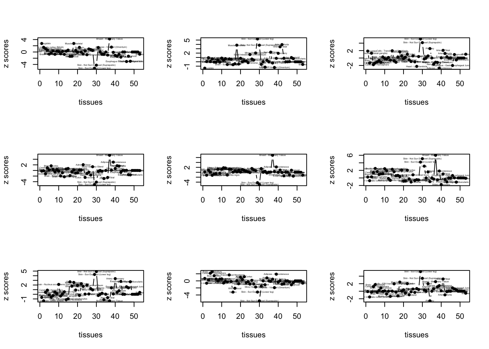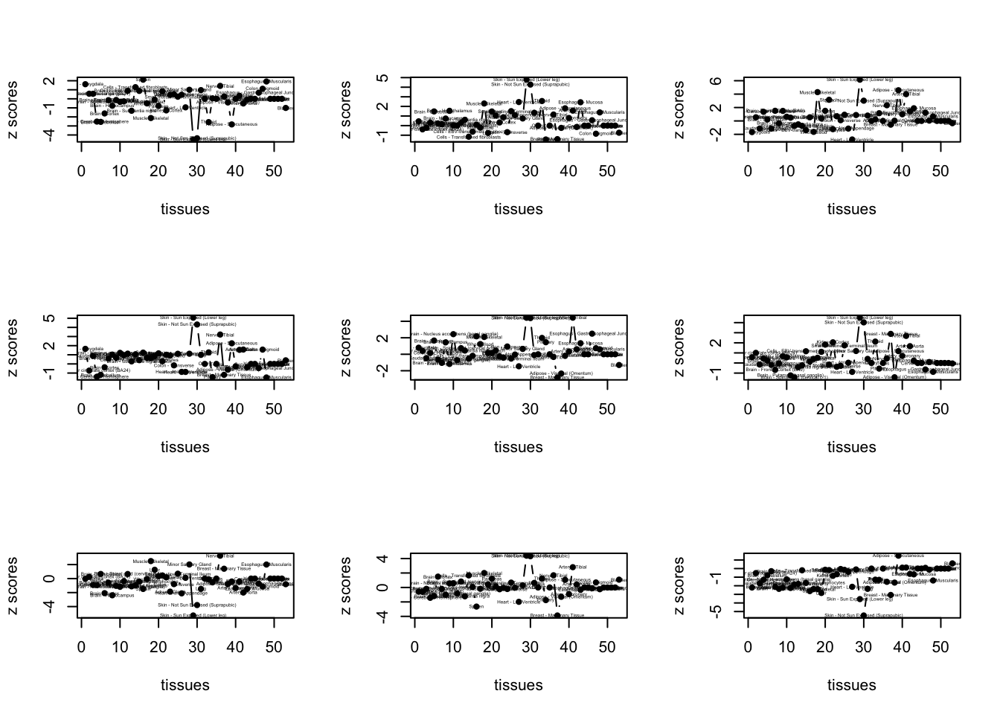
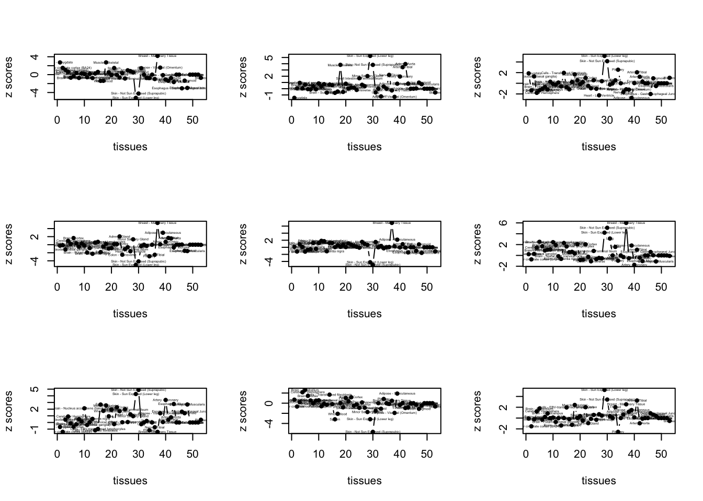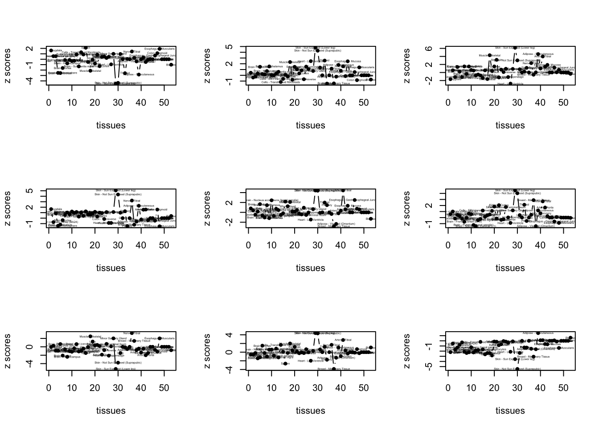
write.table(imp_genes_names, file = "../utilities/sex_flash/skin.txt", quote = FALSE, row.names = FALSE, col.names = FALSE)
out <- mygene::queryMany(imp_genes_names[1:50], scopes="ensembl.gene", fields=c("name", "summary"), species="human");## Finished
## Pass returnall=TRUE to return lists of duplicate or missing query terms.cbind.data.frame(out$name, out$summary)## out$name
## 1 elastin
## 2 eukaryotic translation initiation factor 2B subunit gamma
## 3 SEC14 like lipid binding 2
## 4 proteasome activator subunit 2
## 5 leptin receptor overlapping transcript-like 1
## 6 MIER family member 2
## 7 plasminogen receptor with a C-terminal lysine
## 8 zinc finger AN1-type containing 5
## 9 lamin B1
## 10 casein kinase 1 alpha 1
## 11 6-phosphofructo-2-kinase/fructose-2,6-biphosphatase 4
## 12 mitochondrial ribosomal protein L19
## 13 apolipoprotein C1
## 14 SWAP switching B-cell complex subunit 70
## 15 fatty acid desaturase 2
## 16 sphingomyelin phosphodiesterase 2
## 17 syntaxin 6
## 18 peptidylprolyl isomerase like 1
## 19 mediator complex subunit 9
## 20 phosphoserine phosphatase
## 21 reticulophagy regulator 1
## 22 mitochondrial calcium uniporter
## 23 natriuretic peptide receptor 2
## 24 farnesyl diphosphate synthase
## 25 fibulin 2
## 26 cell division cycle 25A
## 27 gap junction protein beta 2
## 28 deleted in primary ciliary dyskinesia homolog (mouse)
## 29 glutamic--pyruvic transaminase
## 30 thymidine kinase 1
## 31 vasorin
## 32 COMM domain containing 5
## 33 leucine rich alpha-2-glycoprotein 1
## 34 RuvB like AAA ATPase 1
## 35 arachidonate 15-lipoxygenase, type B
## 36 hyaluronoglucosaminidase 3
## 37 Fanconi anemia complementation group A
## 38 Jupiter microtubule associated homolog 1
## 39 RAMP2 antisense RNA 1
## 40 ectonucleoside triphosphate diphosphohydrolase 7
## 41 high mobility group nucleosomal binding domain 2 pseudogene 15
## 42 <NA>
## 43 <NA>
## 44 nuclear pore complex interacting protein family member B7
## 45 <NA>
## 46 <NA>
## 47 <NA>
## 48 <NA>
## 49 <NA>
## 50 <NA>
## out$summary
## 1 This gene encodes a protein that is one of the two components of elastic fibers. The encoded protein is rich in hydrophobic amino acids such as glycine and proline, which form mobile hydrophobic regions bounded by crosslinks between lysine residues. Deletions and mutations in this gene are associated with supravalvular aortic stenosis (SVAS) and autosomal dominant cutis laxa. Multiple transcript variants encoding different isoforms have been found for this gene.
## 2 The protein encoded by this gene is one of the subunits of initiation factor eIF2B, which catalyzes the exchange of eukaryotic initiation factor 2-bound GDP for GTP. It has also been found to function as a cofactor of hepatitis C virus internal ribosome entry site-mediated translation. Mutations in this gene have been associated with leukodystrophy with vanishing white matter. Alternatively spliced transcript variants encoding different isoforms have been found for this gene.
## 3 This gene encodes a cytosolic protein which belongs to a family of lipid-binding proteins including Sec14p, alpha-tocopherol transfer protein, and cellular retinol-binding protein. The encoded protein stimulates squalene monooxygenase which is a downstream enzyme in the cholesterol biosynthetic pathway. Alternatively spliced transcript variants encoding different isoforms have been identified for this gene.
## 4 The 26S proteasome is a multicatalytic proteinase complex with a highly ordered structure composed of 2 complexes, a 20S core and a 19S regulator. The 20S core is composed of 4 rings of 28 non-identical subunits; 2 rings are composed of 7 alpha subunits and 2 rings are composed of 7 beta subunits. The 19S regulator is composed of a base, which contains 6 ATPase subunits and 2 non-ATPase subunits, and a lid, which contains up to 10 non-ATPase subunits. Proteasomes are distributed throughout eukaryotic cells at a high concentration and cleave peptides in an ATP/ubiquitin-dependent process in a non-lysosomal pathway. An essential function of a modified proteasome, the immunoproteasome, is the processing of class I MHC peptides. The immunoproteasome contains an alternate regulator, referred to as the 11S regulator or PA28, that replaces the 19S regulator. Three subunits (alpha, beta and gamma) of the 11S regulator have been identified. This gene encodes the beta subunit of the 11S regulator, one of the two 11S subunits that is induced by gamma-interferon. Three beta and three alpha subunits combine to form a heterohexameric ring. Six pseudogenes have been identified on chromosomes 4, 5, 8, 10 and 13.
## 5 <NA>
## 6 <NA>
## 7 <NA>
## 8 <NA>
## 9 This gene encodes one of the two B-type lamin proteins and is a component of the nuclear lamina. A duplication of this gene is associated with autosomal dominant adult-onset leukodystrophy (ADLD). Alternative splicing results in multiple transcript variants.
## 10 <NA>
## 11 The protein encoded by this gene is one of four bifunctional kinase/phosphatases that regulate the concentration of the glycolytic byproduct fructose-2,6-bisphosphate (F2,6BP). The encoded protein is highly expressed in cancer cells and is induced by hypoxia. This protein is essential to the survival of cancer cells under conditions of hypoxia, because it increases the amount of F2,6BP and ATP at a time when the cell cannot produce much of them. This finding suggests that this protein may be a good target for disruption in cancer cells, hopefully imperiling their survival. Several transcript variants encoding different isoforms have been found for this gene.
## 12 Mammalian mitochondrial ribosomal proteins are encoded by nuclear genes and help in protein synthesis within the mitochondrion. Mitochondrial ribosomes (mitoribosomes) consist of a small 28S subunit and a large 39S subunit. They have an estimated 75% protein to rRNA composition compared to prokaryotic ribosomes, where this ratio is reversed. Another difference between mammalian mitoribosomes and prokaryotic ribosomes is that the latter contain a 5S rRNA. Among different species, the proteins comprising the mitoribosome differ greatly in sequence, and sometimes in biochemical properties, which prevents easy recognition by sequence homology. This gene encodes a 39S subunit protein.
## 13 This gene encodes a member of the apolipoprotein C1 family. This gene is expressed primarily in the liver, and it is activated when monocytes differentiate into macrophages. The encoded protein plays a central role in high density lipoprotein (HDL) and very low density lipoprotein (VLDL) metabolism. This protein has also been shown to inhibit cholesteryl ester transfer protein in plasma. A pseudogene of this gene is located 4 kb downstream in the same orientation, on the same chromosome. This gene is mapped to chromosome 19, where it resides within a apolipoprotein gene cluster. Alternative splicing and the use of alternative promoters results in multiple transcript variants.
## 14 <NA>
## 15 The protein encoded by this gene is a member of the fatty acid desaturase (FADS) gene family. Desaturase enzymes regulate unsaturation of fatty acids through the introduction of double bonds between defined carbons of the fatty acyl chain. FADS family members are considered fusion products composed of an N-terminal cytochrome b5-like domain and a C-terminal multiple membrane-spanning desaturase portion, both of which are characterized by conserved histidine motifs. This gene is clustered with family members at 11q12-q13.1; this cluster is thought to have arisen evolutionarily from gene duplication based on its similar exon/intron organization. Alternative splicing results in multiple transcript variants encoding different isoforms.
## 16 This gene encodes a protein which was initially identified as a sphingomyelinase based on sequence similarity between bacterial sphingomyelinases and a yeast protein. Subsequent studies showed that its biological function is less likely to be as a sphingomyelinase and instead as a lysophospholipase.
## 17 <NA>
## 18 This gene is a member of the cyclophilin family of peptidylprolyl isomerases (PPIases). The cyclophilins are a highly conserved, ubiquitous family, members of which play an important role in protein folding, immunosuppression by cyclosporin A, and infection of HIV-1 virions. Based on similarity to other PPIases, this protein could accelerate the folding of proteins and might catalyze the cis-trans isomerization of proline imidic peptide bonds in oligopeptides.
## 19 The multiprotein Mediator complex is a coactivator required for activation of RNA polymerase II transcription by DNA bound transcription factors. The protein encoded by this gene is thought to be a subunit of the Mediator complex. This gene is located within the Smith-Magenis syndrome region on chromosome 17.
## 20 The protein encoded by this gene belongs to a subfamily of the phosphotransferases. This encoded enzyme is responsible for the third and last step in L-serine formation. It catalyzes magnesium-dependent hydrolysis of L-phosphoserine and is also involved in an exchange reaction between L-serine and L-phosphoserine. Deficiency of this protein is thought to be linked to Williams syndrome.
## 21 The protein encoded by this gene is a cis-Golgi transmembrane protein that may be necessary for the long-term survival of nociceptive and autonomic ganglion neurons. Mutations in this gene are a cause of hereditary sensory and autonomic neuropathy type IIB (HSAN IIB), and this gene may also play a role in susceptibility to vascular dementia. Alternatively spliced transcript variants encoding multiple isoforms have been observed for this gene.
## 22 This gene encodes a calcium transporter that localizes to the mitochondrial inner membrane. The encoded protein interacts with mitochondrial calcium uptake 1. Alternative splicing results in multiple transcript variants.
## 23 This gene encodes natriuretic peptide receptor B, one of two integral membrane receptors for natriuretic peptides. Both NPR1 and NPR2 contain five functional domains: an extracellular ligand-binding domain, a single membrane-spanning region, and intracellularly a protein kinase homology domain, a helical hinge region involved in oligomerization, and a carboxyl-terminal guanylyl cyclase catalytic domain. The protein is the primary receptor for C-type natriuretic peptide (CNP), which upon ligand binding exhibits greatly increased guanylyl cyclase activity. Mutations in this gene are the cause of acromesomelic dysplasia Maroteaux type.
## 24 This gene encodes an enzyme that catalyzes the production of geranyl pyrophosphate and farnesyl pyrophosphate from isopentenyl pyrophosphate and dimethylallyl pyrophosphate. The resulting product, farnesyl pyrophosphate, is a key intermediate in cholesterol and sterol biosynthesis, a substrate for protein farnesylation and geranylgeranylation, and a ligand or agonist for certain hormone receptors and growth receptors. Drugs that inhibit this enzyme prevent the post-translational modifications of small GTPases and have been used to treat diseases related to bone resorption. Multiple pseudogenes have been found on chromosomes 1, 7, 14, 15, 21 and X. Multiple transcript variants encoding different isoforms have been found for this gene.
## 25 This gene encodes an extracellular matrix protein, which belongs to the fibulin family. This protein binds various extracellular ligands and calcium. It may play a role during organ development, in particular, during the differentiation of heart, skeletal and neuronal structures. Alternatively spliced transcript variants encoding different isoforms have been identified.
## 26 CDC25A is a member of the CDC25 family of phosphatases. CDC25A is required for progression from G1 to the S phase of the cell cycle. It activates the cyclin-dependent kinase CDC2 by removing two phosphate groups. CDC25A is specifically degraded in response to DNA damage, which prevents cells with chromosomal abnormalities from progressing through cell division. CDC25A is an oncogene, although its exact role in oncogenesis has not been demonstrated. Two transcript variants encoding different isoforms have been found for this gene.
## 27 This gene encodes a member of the gap junction protein family. The gap junctions were first characterized by electron microscopy as regionally specialized structures on plasma membranes of contacting adherent cells. These structures were shown to consist of cell-to-cell channels that facilitate the transfer of ions and small molecules between cells. The gap junction proteins, also known as connexins, purified from fractions of enriched gap junctions from different tissues differ. According to sequence similarities at the nucleotide and amino acid levels, the gap junction proteins are divided into two categories, alpha and beta. Mutations in this gene are responsible for as much as 50% of pre-lingual, recessive deafness.
## 28 This gene in mouse encodes a protein that may be involved in the generation and maintenance of ciliated cells. In mouse, expression of this gene increases during ciliated cell differentiation, and disruption of this gene has been linked to primary ciliary dyskinesia.
## 29 This gene encodes cytosolic alanine aminotransaminase 1 (ALT1); also known as glutamate-pyruvate transaminase 1. This enzyme catalyzes the reversible transamination between alanine and 2-oxoglutarate to generate pyruvate and glutamate and, therefore, plays a key role in the intermediary metabolism of glucose and amino acids. Serum activity levels of this enzyme are routinely used as a biomarker of liver injury caused by drug toxicity, infection, alcohol, and steatosis. A related gene on chromosome 16 encodes a putative mitochondrial alanine aminotransaminase.
## 30 The protein encoded by this gene is a cytosolic enzyme that catalyzes the addition of a gamma-phosphate group to thymidine. This creates dTMP and is the first step in the biosynthesis of dTTP, which is one component required for DNA replication. The encoded protein, whose levels fluctuate depending on the cell cycle stage, can act as a low activity dimer or a high activity tetramer. High levels of this protein have been used as a biomarker for diagnosing and categorizing many types of cancers.
## 31 <NA>
## 32 <NA>
## 33 The leucine-rich repeat (LRR) family of proteins, including LRG1, have been shown to be involved in protein-protein interaction, signal transduction, and cell adhesion and development. LRG1 is expressed during granulocyte differentiation (O'Donnell et al., 2002 [PubMed 12223515]).
## 34 This gene encodes a protein that has both DNA-dependent ATPase and DNA helicase activities and belongs to the ATPases associated with diverse cellular activities (AAA+) protein family. The encoded protein associates with several multisubunit transcriptional complexes and with protein complexes involved in both ATP-dependent remodeling and histone modification. Alternate splicing results in multiple transcript variants.
## 35 This gene encodes a member of the lipoxygenase family of structurally related nonheme iron dioxygenases involved in the production of fatty acid hydroperoxides. The encoded protein converts arachidonic acid exclusively to 15S-hydroperoxyeicosatetraenoic acid, while metabolizing linoleic acid less effectively. This gene is located in a cluster of related genes and a pseudogene that spans approximately 100 kilobases on the short arm of chromosome 17. Alternatively spliced transcript variants encoding different isoforms have been described.
## 36 This gene encodes a member of the hyaluronidase family. Hyaluronidases are endoglycosidase enzymes that degrade hyaluronan, one of the major glycosaminoglycans of the extracellular matrix. The regulated turnover of hyaluronan plays a critical role in many biological processes including cell proliferation, migration and differentiation. The encoded protein may also play an important role in sperm function. This gene is one of several related genes in a region of chromosome 3p21.3 associated with tumor suppression, and the expression of specific transcript variants may be indicative of tumor status. Alternatively spliced transcript variants encoding multiple isoforms have been observed for this gene, and some isoforms may lack hyaluronidase activity. This gene overlaps and is on the same strand as N-acetyltransferase 6 (GCN5-related), and some transcripts of each gene share a portion of the first exon.
## 37 The Fanconi anemia complementation group (FANC) currently includes FANCA, FANCB, FANCC, FANCD1 (also called BRCA2), FANCD2, FANCE, FANCF, FANCG, FANCI, FANCJ (also called BRIP1), FANCL, FANCM and FANCN (also called PALB2). The previously defined group FANCH is the same as FANCA. Fanconi anemia is a genetically heterogeneous recessive disorder characterized by cytogenetic instability, hypersensitivity to DNA crosslinking agents, increased chromosomal breakage, and defective DNA repair. The members of the Fanconi anemia complementation group do not share sequence similarity; they are related by their assembly into a common nuclear protein complex. This gene encodes the protein for complementation group A. Alternative splicing results in multiple transcript variants encoding different isoforms. Mutations in this gene are the most common cause of Fanconi anemia.
## 38 <NA>
## 39 <NA>
## 40 This gene encodes a purine-converting ectoenzyme which belongs to the ecto-nucleoside triphosphate diphosphohydrolase (E-NTPDase) family. The encoded protein hydrolyzes extracellular nucleoside triphosphates (UTP, GTP, and CTP) to nucleoside monophosphates as part of a purinergic signaling pathway. It contains two transmembrane domains at the N- and C-termini and a large, hydrophobic catalytic domain located in between. This gene affects oxidative stress as well as DNA damage and is a mediator of senescence.
## 41 <NA>
## 42 <NA>
## 43 <NA>
## 44 <NA>
## 45 <NA>
## 46 <NA>
## 47 <NA>
## 48 <NA>
## 49 <NA>
## 50 <NA>pathway2 <- read.delim("../utilities/sex_flash/skin_pathway.tab")
if(length(which(pathway2$q.value < 0.05)) > 2){
pathway2 <- pathway2[which(pathway2$q.value < 0.1),]
}
maxpath = 75
pathway <- pathway2[1:min(maxpath, dim(pathway2)[1]), ]
ensembl_genes <- pathway$members_input_overlap
pathway_list_genes <- sapply(ensembl_genes, function(x) return(strsplit(as.character(x), "; ")))
all_genes <- Reduce(union, pathway_list_genes)
pathway_mat <- matrix(0, length(pathway_list_genes), length(all_genes))
for(l in 1:dim(pathway_mat)[1]){
pathway_mat[l, match(pathway_list_genes[[l]], all_genes)] <- 1
}
pathway_bimat <- (pathway_mat)%*%t(pathway_mat)
pathway_bimat_prop <- diag(1/sqrt(diag(pathway_bimat)), dim(pathway_bimat)[1]) %*% pathway_bimat %*% diag(1/sqrt(diag(pathway_bimat)), dim(pathway_bimat)[1])
col=c(rev(rgb(seq(1,0,length=1000),1,seq(1,0,length=1000))),
rgb(1,seq(1,0,length=1000),seq(1,0,length=1000)))
heatmap(pathway_bimat_prop, labRow = pathway$pathway, labCol = pathway$pathway, cexRow = 0.3, cexCol = 0.3, col = col, zlim = c(-1,1),
scale = "none", margins = c(5, 5))ash_data <- get(load("../output/sex_cor_ash.rda"))
lfdr_mat <- ash_data$post.lfsr
index <- grep("Adipose", U)
lfdr_thresh <- apply(lfdr_mat, 2, function(x) {
if(min(x[index]) < 0.05 && min(x[-index]) > 0.80){
y <- 1
}else{ y <- 0}
return(y)})imp_genes_indices <- which(lfdr_thresh == 1)
imp_genes_names <- gene_names_1[imp_genes_indices]
imp_genes_names[1:10]## [1] "ENSG00000014641" "ENSG00000027847" "ENSG00000033011"
## [4] "ENSG00000049656" "ENSG00000054116" "ENSG00000063241"
## [7] "ENSG00000066322" "ENSG00000072952" "ENSG00000073578"
## [10] "ENSG00000100412"par(mfrow=c(3,3))
for(m in 1:length(imp_genes_indices)){
plot(1:53, zdat[order_index,imp_genes_indices[m]], pch=20, type="b", xlab = "tissues", ylab="z scores")
text(1:53, zdat[order_index,imp_genes_indices[m]], U[order_index], cex=0.3)
}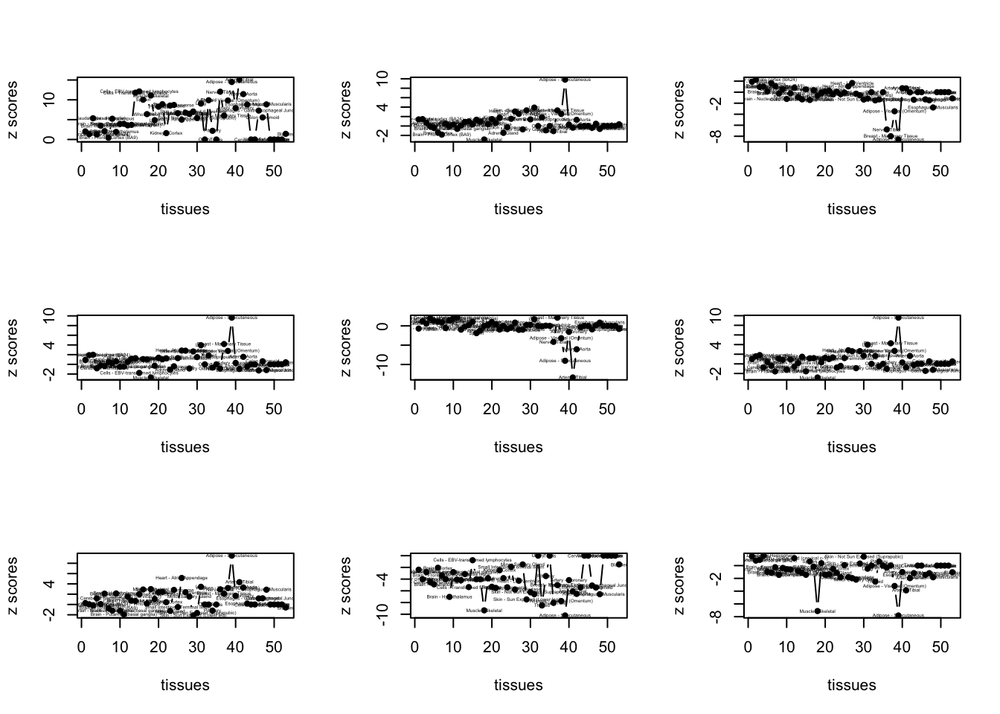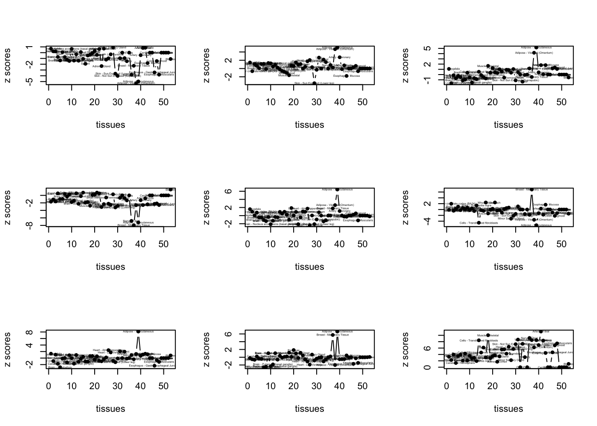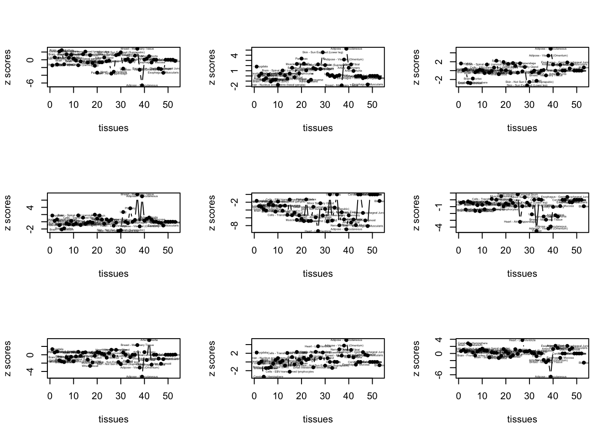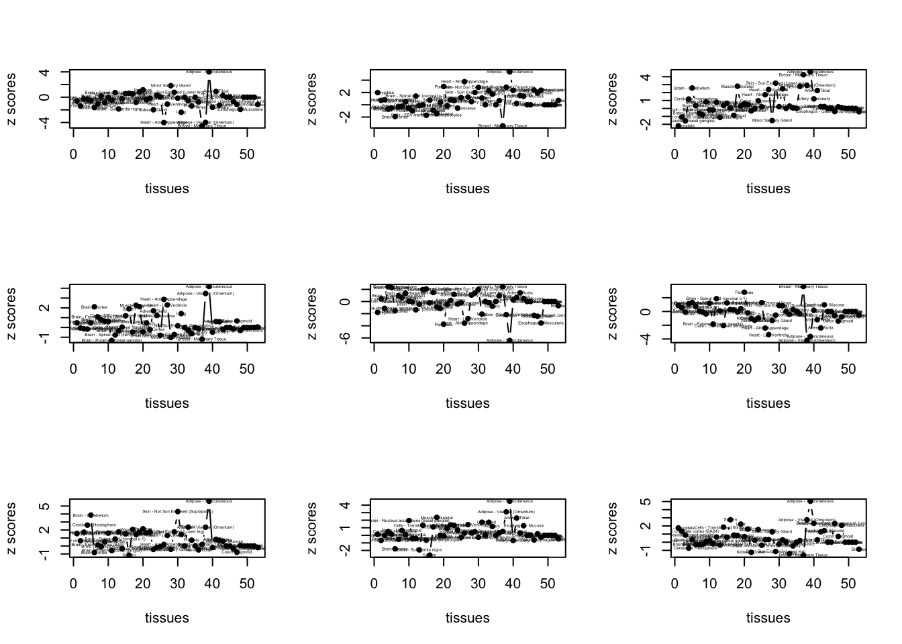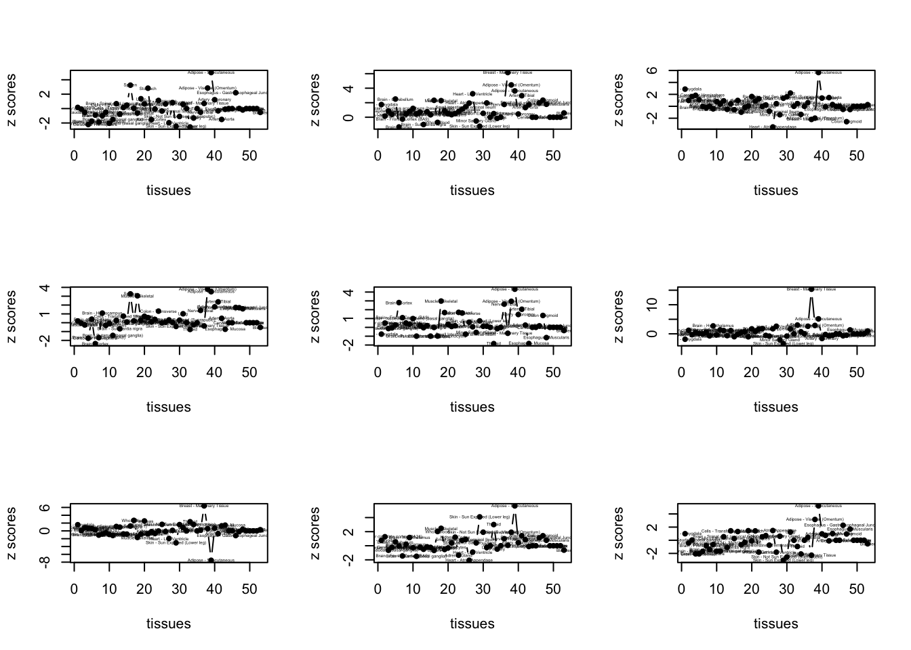
 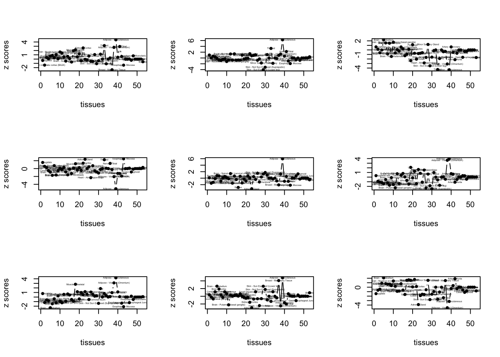
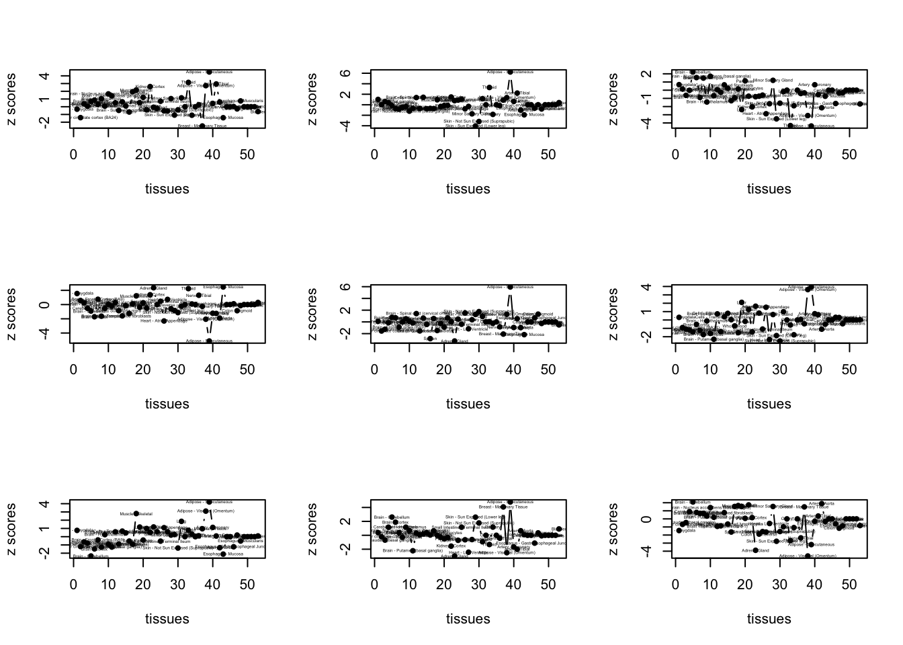
write.table(imp_genes_names, file = "../utilities/sex_flash/adipose.txt", quote = FALSE, row.names = FALSE, col.names = FALSE)
out <- mygene::queryMany(imp_genes_names[1:50], scopes="ensembl.gene", fields=c("name", "summary"), species="human");## Finishedcbind.data.frame(out$name, out$summary)## out$name
## 1 malate dehydrogenase 1
## 2 beta-1,4-galactosyltransferase 7
## 3 ALG1, chitobiosyldiphosphodolichol beta-mannosyltransferase
## 4 CLPTM1 like
## 5 trafficking protein particle complex 3
## 6 isochorismatase domain containing 2
## 7 ELOVL fatty acid elongase 1
## 8 murine retrovirus integration site 1 homolog
## 9 succinate dehydrogenase complex flavoprotein subunit A
## 10 aconitase 2
## 11 SGK2, serine/threonine kinase 2
## 12 CLPTM1, transmembrane protein
## 13 RAD51 paralog C
## 14 COMM domain containing 9
## 15 mitochondrial trans-2-enoyl-CoA reductase
## 16 mannosidase alpha class 1C member 1
## 17 dehydrodolichyl diphosphate synthase subunit
## 18 cyclin D2
## 19 kinetochore localized astrin/SPAG5 binding protein
## 20 DNA polymerase nu
## 21 clustered mitochondria homolog
## 22 synaptotagmin 11
## 23 SCO1, cytochrome c oxidase assembly protein
## 24 ergosterol biosynthesis 28 homolog
## 25 DAZ interacting zinc finger protein 1
## 26 protease associated domain containing 1
## 27 NAC alpha domain containing
## 28 translational activator of cytochrome c oxidase I
## 29 C-C motif chemokine ligand 21
## 30 RAB20, member RAS oncogene family
## 31 family with sequence similarity 198 member A
## 32 cullin associated and neddylation dissociated 2 (putative)
## 33 TNF receptor superfamily member 21
## 34 lactamase beta 2
## 35 endonuclease domain containing 1
## 36 quinoid dihydropteridine reductase
## 37 phosphoglucomutase 5
## 38 zinc finger protein 19
## 39 retention in endoplasmic reticulum sorting receptor 1
## 40 SSU72 homolog, RNA polymerase II CTD phosphatase
## 41 THAP domain containing 8
## 42 small nuclear ribonucleoprotein U11/U12 subunit 25
## 43 inter-alpha-trypsin inhibitor heavy chain 3
## 44 succinate-CoA ligase alpha subunit
## 45 oxidative stress induced growth inhibitor family member 2
## 46 solute carrier family 16 member 9
## 47 ubiquitin domain containing 1
## 48 CXADR like membrane protein
## 49 methionine adenosyltransferase 2A
## 50 ubiquinol-cytochrome c reductase, Rieske iron-sulfur polypeptide 1
## out$summary
## 1 This gene encodes an enzyme that catalyzes the NAD/NADH-dependent, reversible oxidation of malate to oxaloacetate in many metabolic pathways, including the citric acid cycle. Two main isozymes are known to exist in eukaryotic cells: one is found in the mitochondrial matrix and the other in the cytoplasm. This gene encodes the cytosolic isozyme, which plays a key role in the malate-aspartate shuttle that allows malate to pass through the mitochondrial membrane to be transformed into oxaloacetate for further cellular processes. Alternatively spliced transcript variants have been found for this gene. A recent study showed that a C-terminally extended isoform is produced by use of an alternative in-frame translation termination codon via a stop codon readthrough mechanism, and that this isoform is localized in the peroxisomes. Pseudogenes have been identified on chromosomes X and 6.
## 2 This gene is a member of the beta-1,4-galactosyltransferase (beta4GalT) family. Family members encode type II membrane-bound glycoproteins that appear to have exclusive specificity for the donor substrate UDP-galactose. Each beta4GalT member has a distinct function in the biosynthesis of different glycoconjugates and saccharide structures. As type II membrane proteins, they have an N-terminal hydrophobic signal sequence that directs the protein to the Golgi apparatus which then remains uncleaved to function as a transmembrane anchor. The enzyme encoded by this gene attaches the first galactose in the common carbohydrate-protein linkage (GlcA-beta1,3-Gal-beta1,3-Gal-beta1,4-Xyl-beta1-O-Ser) found in proteoglycans. This enzyme differs from other beta4GalTs because it lacks the conserved Cys residues found in beta4GalT1-beta4GalT6 and it is located in cis-Golgi instead of trans-Golgi. Mutations in this gene have been associated with the progeroid form of Ehlers-Danlos syndrome.
## 3 The enzyme encoded by this gene catalyzes the first mannosylation step in the biosynthesis of lipid-linked oligosaccharides. This gene is mutated in congenital disorder of glycosylation type Ik.
## 4 The protein encoded by this gene is a membrane protein whose overexpression in cisplatin-sensitive cells causes apoptosis. Polymorphisms in this gene have been reported to increase susceptibility to several cancers, including lung, pancreatic, and breast cancers.
## 5 This gene encodes a component of the trafficking protein particle complex, which tethers transport vesicles to the cis-Golgi membrane. The encoded protein participates in the regulation of transport from the endoplasmic reticulum to the Golgi apparatus. Alternative splicing results in multiple transcript variants.
## 6 <NA>
## 7 <NA>
## 8 This gene is similar to a putative mouse tumor suppressor gene (Mrvi1) that is frequently disrupted by mouse AIDS-related virus (MRV). The encoded protein, which is found in the membrane of the endoplasmic reticulum, is similar to Jaw1, a lymphoid-restricted protein whose expression is down-regulated during lymphoid differentiation. This protein is a substrate of cGMP-dependent kinase-1 (PKG1) that can function as a regulator of IP3-induced calcium release. Studies in mouse suggest that MRV integration at Mrvi1 induces myeloid leukemia by altering the expression of a gene important for myeloid cell growth and/or differentiation, and thus this gene may function as a myeloid leukemia tumor suppressor gene. Several alternatively spliced transcript variants encoding different isoforms have been found for this gene, and alternative translation start sites, including a non-AUG (CUG) start site, are used.
## 9 This gene encodes a major catalytic subunit of succinate-ubiquinone oxidoreductase, a complex of the mitochondrial respiratory chain. The complex is composed of four nuclear-encoded subunits and is localized in the mitochondrial inner membrane. Mutations in this gene have been associated with a form of mitochondrial respiratory chain deficiency known as Leigh Syndrome. A pseudogene has been identified on chromosome 3q29. Alternatively spliced transcript variants encoding different isoforms have been found for this gene.
## 10 The protein encoded by this gene belongs to the aconitase/IPM isomerase family. It is an enzyme that catalyzes the interconversion of citrate to isocitrate via cis-aconitate in the second step of the TCA cycle. This protein is encoded in the nucleus and functions in the mitochondrion. It was found to be one of the mitochondrial matrix proteins that are preferentially degraded by the serine protease 15(PRSS15), also known as Lon protease, after oxidative modification.
## 11 This gene encodes a serine/threonine protein kinase. Although this gene product is similar to serum- and glucocorticoid-induced protein kinase (SGK), this gene is not induced by serum or glucocorticoids. This gene is induced in response to signals that activate phosphatidylinositol 3-kinase, which is also true for SGK. Alternative splicing results in multiple transcript variants.
## 12 <NA>
## 13 This gene is a member of the RAD51 family. RAD51 family members are highly similar to bacterial RecA and Saccharomyces cerevisiae Rad51 and are known to be involved in the homologous recombination and repair of DNA. This protein can interact with other RAD51 paralogs and is reported to be important for Holliday junction resolution. Mutations in this gene are associated with Fanconi anemia-like syndrome. This gene is one of four localized to a region of chromosome 17q23 where amplification occurs frequently in breast tumors. Overexpression of the four genes during amplification has been observed and suggests a possible role in tumor progression. Alternative splicing results in multiple transcript variants.
## 14 <NA>
## 15 The protein encoded by this gene is an oxidoreductase that catalyzes the last step in mitochondrial fatty acid synthesis. Defects in this gene are a cause of childhood-onset dystonia and optic atrophy.
## 16 <NA>
## 17 The protein encoded by this gene catalyzes cis-prenyl chain elongation to produce the polyprenyl backbone of dolichol, a glycosyl carrier lipid required for the biosynthesis of several classes of glycoproteins. Mutations in this gene are associated with retinitis pigmentosa type 59. Alternatively spliced transcript variants encoding different isoforms have been described for this gene.
## 18 The protein encoded by this gene belongs to the highly conserved cyclin family, whose members are characterized by a dramatic periodicity in protein abundance through the cell cycle. Cyclins function as regulators of CDK kinases. Different cyclins exhibit distinct expression and degradation patterns which contribute to the temporal coordination of each mitotic event. This cyclin forms a complex with CDK4 or CDK6 and functions as a regulatory subunit of the complex, whose activity is required for cell cycle G1/S transition. This protein has been shown to interact with and be involved in the phosphorylation of tumor suppressor protein Rb. Knockout studies of the homologous gene in mouse suggest the essential roles of this gene in ovarian granulosa and germ cell proliferation. High level expression of this gene was observed in ovarian and testicular tumors. Mutations in this gene are associated with megalencephaly-polymicrogyria-polydactyly-hydrocephalus syndrome 3 (MPPH3).
## 19 <NA>
## 20 This gene encodes a DNA polymerase type-A family member. The encoded protein plays a role in DNA repair and homologous recombination. This gene shares its 5' exons with some transcripts from overlapping GeneID: 79441, which encodes an augmentin-like protein complex subunit.
## 21 <NA>
## 22 This gene is a member of the synaptotagmin gene family and encodes a protein similar to other family members that are known calcium sensors and mediate calcium-dependent regulation of membrane trafficking in synaptic transmission. The encoded protein is also a substrate for ubiquitin-E3-ligase parkin. The gene has previously been referred to as synaptotagmin XII but has been renamed synaptotagmin XI to be consistent with mouse and rat official nomenclature.
## 23 Mammalian cytochrome c oxidase (COX) catalyzes the transfer of reducing equivalents from cytochrome c to molecular oxygen and pumps protons across the inner mitochondrial membrane. In yeast, 2 related COX assembly genes, SCO1 and SCO2 (synthesis of cytochrome c oxidase), enable subunits 1 and 2 to be incorporated into the holoprotein. This gene is the human homolog to the yeast SCO1 gene.
## 24 <NA>
## 25 <NA>
## 26 <NA>
## 27 <NA>
## 28 This gene encodes a mitochondrial protein that function as a translational activator of mitochondrially-encoded cytochrome c oxidase 1. Mutations in this gene are associated with Leigh syndrome.
## 29 This antimicrobial gene is one of several CC cytokine genes clustered on the p-arm of chromosome 9. Cytokines are a family of secreted proteins involved in immunoregulatory and inflammatory processes. The CC cytokines are proteins characterized by two adjacent cysteines. Similar to other chemokines the protein encoded by this gene inhibits hemopoiesis and stimulates chemotaxis. This protein is chemotactic in vitro for thymocytes and activated T cells, but not for B cells, macrophages, or neutrophils. The cytokine encoded by this gene may also play a role in mediating homing of lymphocytes to secondary lymphoid organs. It is a high affinity functional ligand for chemokine receptor 7 that is expressed on T and B lymphocytes and a known receptor for another member of the cytokine family (small inducible cytokine A19).
## 30 <NA>
## 31 <NA>
## 32 <NA>
## 33 This gene encodes a member of the tumor necrosis factor receptor superfamily. The encoded protein activates nuclear factor kappa-B and mitogen-activated protein kinase 8 (also called c-Jun N-terminal kinase 1), and induces cell apoptosis. Through its death domain, the encoded receptor interacts with tumor necrosis factor receptor type 1-associated death domain (TRADD) protein, which is known to mediate signal transduction of tumor necrosis factor receptors. Knockout studies in mice suggest that this gene plays a role in T-helper cell activation, and may be involved in inflammation and immune regulation.
## 34 <NA>
## 35 <NA>
## 36 This gene encodes the enzyme dihydropteridine reductase, which catalyzes the NADH-mediated reduction of quinonoid dihydrobiopterin. This enzyme is an essential component of the pterin-dependent aromatic amino acid hydroxylating systems. Mutations in this gene resulting in QDPR deficiency include aberrant splicing, amino acid substitutions, insertions, or premature terminations. Dihydropteridine reductase deficiency presents as atypical phenylketonuria due to insufficient production of biopterin, a cofactor for phenylalanine hydroxylase.
## 37 Phosphoglucomutases (EC 5.2.2.2.), such as PGM5, are phosphotransferases involved in interconversion of glucose-1-phosphate and glucose-6-phosphate. PGM activity is essential in formation of carbohydrates from glucose-6-phosphate and in formation of glucose-6-phosphate from galactose and glycogen (Edwards et al., 1995 [PubMed 8586438]).
## 38 The protein encoded by this gene contains a zinc finger, a nucleic acid-binding domain present in many transcription factors. This gene is located in a region next to ZNF23, a gene also encoding a zinc finger protein, on chromosome 16.
## 39 The protein encoded by this gene is a multi-pass membrane protein that is localized to the golgi apparatus. It is involved in the retention of endoplasmic reticulum (ER) membrane proteins in the ER and retrieval of ER membrane proteins from the early Golgi compartment to facilitate gamma-secretase complex assembly.
## 40 <NA>
## 41 <NA>
## 42 Two types of spliceosomes catalyze splicing of pre-mRNAs. The major U2-type spliceosome is found in all eukaryotes and removes U2-type introns, which represent more than 99% of pre-mRNA introns. The minor U12-type spliceosome is found in some eukaryotes and removes U12-type introns, which are rare and have distinct splice consensus signals. The U12-type spliceosome consists of several small nuclear RNAs and associated proteins. This gene encodes a 25K protein that is a component of the U12-type spliceosome.
## 43 This gene encodes the heavy chain subunit of the pre-alpha-trypsin inhibitor complex. This complex may stabilize the extracellular matrix through its ability to bind hyaluronic acid. Polymorphisms of this gene may be associated with increased risk for schizophrenia and major depressive disorder. This gene is present in an inter-alpha-trypsin inhibitor family gene cluster on chromosome 3.
## 44 This gene encodes the alpha subunit of the heterodimeric enzyme succinate coenzyme A ligase. This enzyme is targeted to the mitochondria and catalyzes the conversion of succinyl CoA and ADP or GDP to succinate and ATP or GTP. Mutations in this gene are the cause of the metabolic disorder fatal infantile lactic acidosis and mitochondrial DNA depletion.
## 45 <NA>
## 46 <NA>
## 47 The degradation of many proteins is carried out by the ubiquitin pathway in which proteins are targeted for degradation by covalent conjugation of the polypeptide ubiquitin. This gene encodes a protein that belongs to the ubiquitin family of proteins. The encoded protein is thought to regulate E2 ubiquitin conjugating enzymes belonging to the UBE2D family.
## 48 This gene encodes a type I transmembrane protein that is localized to junctional complexes between endothelial and epithelial cells and may have a role in cell-cell adhesion. Expression of this gene in white adipose tissue is implicated in adipocyte maturation and development of obesity. This gene is also essential for normal intestinal development and mutations in the gene are associated with congenital short bowel syndrome.
## 49 The protein encoded by this gene catalyzes the production of S-adenosylmethionine (AdoMet) from methionine and ATP. AdoMet is the key methyl donor in cellular processes.
## 50 <NA>pathway2 <- read.delim("../utilities/sex_flash/adipose_pathway.tab")
if(length(which(pathway2$q.value < 0.05)) > 2){
pathway2 <- pathway2[which(pathway2$q.value < 0.1),]
}
maxpath = 75
pathway <- pathway2[1:min(maxpath, dim(pathway2)[1]), ]
ensembl_genes <- pathway$members_input_overlap
pathway_list_genes <- sapply(ensembl_genes, function(x) return(strsplit(as.character(x), "; ")))
all_genes <- Reduce(union, pathway_list_genes)
pathway_mat <- matrix(0, length(pathway_list_genes), length(all_genes))
for(l in 1:dim(pathway_mat)[1]){
pathway_mat[l, match(pathway_list_genes[[l]], all_genes)] <- 1
}
pathway_bimat <- (pathway_mat)%*%t(pathway_mat)
pathway_bimat_prop <- diag(1/sqrt(diag(pathway_bimat)), dim(pathway_bimat)[1]) %*% pathway_bimat %*% diag(1/sqrt(diag(pathway_bimat)), dim(pathway_bimat)[1])
col=c(rev(rgb(seq(1,0,length=1000),1,seq(1,0,length=1000))),
rgb(1,seq(1,0,length=1000),seq(1,0,length=1000)))
heatmap(pathway_bimat_prop, labRow = pathway$pathway, labCol = pathway$pathway, cexRow = 0.3, cexCol = 0.3, col = col, zlim = c(-1,1),
scale = "none", margins = c(5, 5))
ash_data <- get(load("../output/sex_cor_ash.rda"))
lfdr_mat <- ash_data$post.lfsr
index <- grep("Thyroid", U)
lfdr_thresh <- apply(lfdr_mat, 2, function(x) {
if(min(x[index]) < 0.05 && min(x[-index]) > 0.80){
y <- 1
}else{ y <- 0}
return(y)})imp_genes_indices <- which(lfdr_thresh == 1)
imp_genes_names <- gene_names_1[imp_genes_indices]
imp_genes_names[1:10]## [1] "ENSG00000069424" "ENSG00000126882" "ENSG00000135077"
## [4] "ENSG00000141337" "ENSG00000141480" "ENSG00000143110"
## [7] "ENSG00000145332" "ENSG00000146094" "ENSG00000149781"
## [10] "ENSG00000153832"par(mfrow=c(3,3))
for(m in 1:length(imp_genes_indices)){
plot(1:53, zdat[order_index,imp_genes_indices[m]], pch=20, type="b", xlab = "tissues", ylab="z scores")
text(1:53, zdat[order_index,imp_genes_indices[m]], U[order_index], cex=0.3)
} 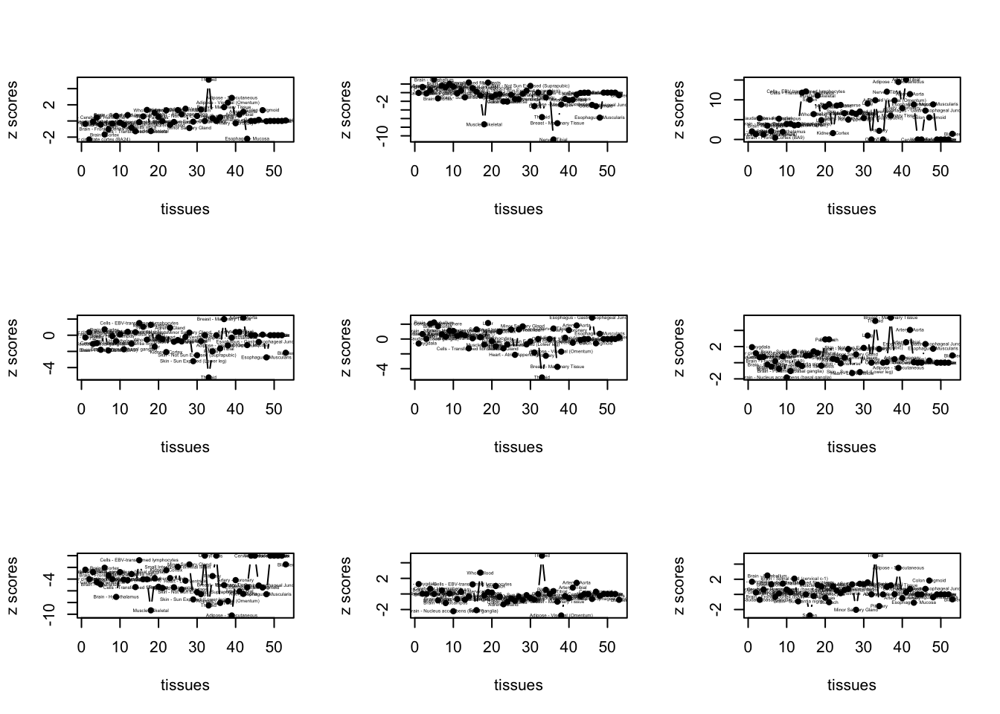
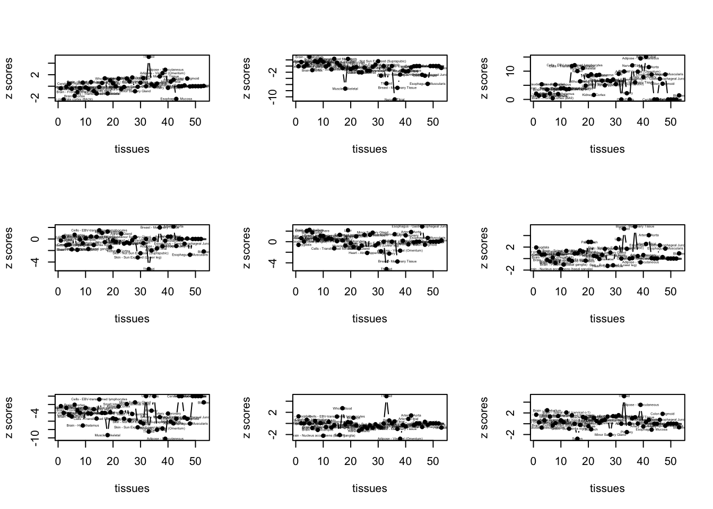
write.table(imp_genes_names, file = "../utilities/sex_flash/thyroid.txt", quote = FALSE, row.names = FALSE, col.names = FALSE)
out <- mygene::queryMany(imp_genes_names[1:50], scopes="ensembl.gene", fields=c("name", "summary"), species="human");## Finished
## Pass returnall=TRUE to return lists of duplicate or missing query terms.cbind.data.frame(out$name, out$summary)## out$name
## 1 potassium voltage-gated channel subfamily A regulatory beta subunit 2
## 2 family with sequence similarity 78 member A
## 3 hepatitis A virus cellular receptor 2
## 4 arylsulfatase G
## 5 arrestin beta 2
## 6 chromosome 1 open reading frame 162
## 7 kelch like family member 8
## 8 docking protein 3
## 9 fermitin family member 3
## 10 F-box protein 36
## 11 V-set and transmembrane domain containing 4
## 12 integrin subunit alpha M
## 13 osteoclast associated, immunoglobulin-like receptor
## 14 family with sequence similarity 174 member A
## 15 RWD domain containing 4
## 16 V-set and immunoglobulin domain containing 10 like
## 17 potassium channel tetramerization domain containing 21
## 18 thymocyte selection associated high mobility group box
## 19 crystallin gamma S
## 20 long intergenic non-protein coding RNA 622
## 21 <NA>
## 22 <NA>
## 23 <NA>
## 24 <NA>
## 25 <NA>
## 26 <NA>
## 27 <NA>
## 28 <NA>
## 29 <NA>
## 30 <NA>
## 31 <NA>
## 32 <NA>
## 33 <NA>
## 34 <NA>
## 35 <NA>
## 36 <NA>
## 37 <NA>
## 38 <NA>
## 39 <NA>
## 40 <NA>
## 41 <NA>
## 42 <NA>
## 43 <NA>
## 44 <NA>
## 45 <NA>
## 46 <NA>
## 47 <NA>
## 48 <NA>
## 49 <NA>
## 50 <NA>
## out$summary
## 1 Voltage-gated potassium (Kv) channels represent the most complex class of voltage-gated ion channels from both functional and structural standpoints. Their diverse functions include regulating neurotransmitter release, heart rate, insulin secretion, neuronal excitability, epithelial electrolyte transport, smooth muscle contraction, and cell volume. Four sequence-related potassium channel genes - shaker, shaw, shab, and shal - have been identified in Drosophila, and each has been shown to have human homolog(s). This gene encodes a member of the potassium channel, voltage-gated, shaker-related subfamily. This member is one of the beta subunits, which are auxiliary proteins associating with functional Kv-alpha subunits. This member alters functional properties of the KCNA4 gene product. Alternative splicing of this gene results in multiple transcript variants encoding distinct isoforms.
## 2 <NA>
## 3 The protein encoded by this gene belongs to the immunoglobulin superfamily, and TIM family of proteins. CD4-positive T helper lymphocytes can be divided into types 1 (Th1) and 2 (Th2) on the basis of their cytokine secretion patterns. Th1 cells are involved in cell-mediated immunity to intracellular pathogens and delayed-type hypersensitivity reactions, whereas, Th2 cells are involved in the control of extracellular helminthic infections and the promotion of atopic and allergic diseases. This protein is a Th1-specific cell surface protein that regulates macrophage activation, and inhibits Th1-mediated auto- and alloimmune responses, and promotes immunological tolerance.
## 4 The protein encoded by this gene belongs to the sulfatase enzyme family. Sulfatases hydrolyze sulfate esters from sulfated steroids, carbohydrates, proteoglycans, and glycolipids. They are involved in hormone biosynthesis, modulation of cell signaling, and degradation of macromolecules. This protein displays arylsulfatase activity at acidic pH, as is typical of lysosomal sulfatases, and has been shown to localize in the lysosomes. Alternatively spliced transcript variants have been found for this gene.
## 5 Members of arrestin/beta-arrestin protein family are thought to participate in agonist-mediated desensitization of G-protein-coupled receptors and cause specific dampening of cellular responses to stimuli such as hormones, neurotransmitters, or sensory signals. Arrestin beta 2, like arrestin beta 1, was shown to inhibit beta-adrenergic receptor function in vitro. It is expressed at high levels in the central nervous system and may play a role in the regulation of synaptic receptors. Besides the brain, a cDNA for arrestin beta 2 was isolated from thyroid gland, and thus it may also be involved in hormone-specific desensitization of TSH receptors. Multiple alternatively spliced transcript variants encoding different isoforms have been found for this gene.
## 6 <NA>
## 7 <NA>
## 8 <NA>
## 9 Kindlins are a small family of proteins that mediate protein-protein interactions involved in integrin activation and thereby have a role in cell adhesion, migration, differentiation, and proliferation. The protein encoded by this gene has a key role in the regulation of hemostasis and thrombosis. This protein may also help maintain the membrane skeleton of erythrocytes. Mutations in this gene cause the autosomal recessive leukocyte adhesion deficiency syndrome-III (LAD-III). Alternative splicing results in multiple transcript variants encoding distinct isoforms.
## 10 Members of the F-box protein family, such as FBXO36, are characterized by an approximately 40-amino acid F-box motif. SCF complexes, formed by SKP1 (MIM 601434), cullin (see CUL1; MIM 603134), and F-box proteins, act as protein-ubiquitin ligases. F-box proteins interact with SKP1 through the F box, and they interact with ubiquitination targets through other protein interaction domains (Jin et al., 2004 [PubMed 15520277]).
## 11 <NA>
## 12 This gene encodes the integrin alpha M chain. Integrins are heterodimeric integral membrane proteins composed of an alpha chain and a beta chain. This I-domain containing alpha integrin combines with the beta 2 chain (ITGB2) to form a leukocyte-specific integrin referred to as macrophage receptor 1 ('Mac-1'), or inactivated-C3b (iC3b) receptor 3 ('CR3'). The alpha M beta 2 integrin is important in the adherence of neutrophils and monocytes to stimulated endothelium, and also in the phagocytosis of complement coated particles. Multiple transcript variants encoding different isoforms have been found for this gene.
## 13 Osteoclasts are multinucleated cells that resorb bone and are essential for bone homeostasis. This gene encodes an osteoclast-associated receptor (OSCAR), which is a member of the leukocyte receptor complex protein family that plays critical roles in the regulation of both innate and adaptive immune responses. The encoded protein may play a role in oxidative stress-mediated atherogenesis as well as monocyte adhesion. Multiple alternatively spliced transcript variants encoding different isoforms have been found for this gene.
## 14 <NA>
## 15 <NA>
## 16 <NA>
## 17 <NA>
## 18 The protein encoded by this gene contains a HMG box DNA binding domain. HMG boxes are found in many eukaryotic proteins involved in chromatin assembly, transcription and replication. This protein may function to regulate T-cell development.
## 19 Crystallins are separated into two classes: taxon-specific, or enzyme, and ubiquitous. The latter class constitutes the major proteins of vertebrate eye lens and maintains the transparency and refractive index of the lens. Since lens central fiber cells lose their nuclei during development, these crystallins are made and then retained throughout life, making them extremely stable proteins. Mammalian lens crystallins are divided into alpha, beta, and gamma families; beta and gamma crystallins are also considered as a superfamily. Alpha and beta families are further divided into acidic and basic groups. Seven protein regions exist in crystallins: four homologous motifs, a connecting peptide, and N- and C-terminal extensions. Gamma-crystallins are a homogeneous group of highly symmetrical, monomeric proteins typically lacking connecting peptides and terminal extensions. They are differentially regulated after early development. This gene encodes a protein initially considered to be a beta-crystallin but the encoded protein is monomeric and has greater sequence similarity to other gamma-crystallins. This gene encodes the most significant gamma-crystallin in adult eye lens tissue. Whether due to aging or mutations in specific genes, gamma-crystallins have been involved in cataract formation.
## 20 <NA>
## 21 <NA>
## 22 <NA>
## 23 <NA>
## 24 <NA>
## 25 <NA>
## 26 <NA>
## 27 <NA>
## 28 <NA>
## 29 <NA>
## 30 <NA>
## 31 <NA>
## 32 <NA>
## 33 <NA>
## 34 <NA>
## 35 <NA>
## 36 <NA>
## 37 <NA>
## 38 <NA>
## 39 <NA>
## 40 <NA>
## 41 <NA>
## 42 <NA>
## 43 <NA>
## 44 <NA>
## 45 <NA>
## 46 <NA>
## 47 <NA>
## 48 <NA>
## 49 <NA>
## 50 <NA>pathway2 <- read.delim("../utilities/sex_flash/thyroid_pathway.tab")## Warning in read.table(file = file, header = header, sep = sep, quote =
## quote, : incomplete final line found by readTableHeader on '../utilities/
## sex_flash/thyroid_pathway.tab'if(length(which(pathway2$q.value < 0.05)) > 2){
pathway2 <- pathway2[which(pathway2$q.value < 0.1),]
}
maxpath = 75
pathway <- pathway2[1:min(maxpath, dim(pathway2)[1]), ]
ensembl_genes <- pathway$members_input_overlap
pathway_list_genes <- sapply(ensembl_genes, function(x) return(strsplit(as.character(x), "; ")))
all_genes <- Reduce(union, pathway_list_genes)
pathway_mat <- matrix(0, length(pathway_list_genes), length(all_genes))
for(l in 1:dim(pathway_mat)[1]){
pathway_mat[l, match(pathway_list_genes[[l]], all_genes)] <- 1
}
pathway_bimat <- (pathway_mat)%*%t(pathway_mat)
pathway_bimat_prop <- diag(1/sqrt(diag(pathway_bimat)), dim(pathway_bimat)[1]) %*% pathway_bimat %*% diag(1/sqrt(diag(pathway_bimat)), dim(pathway_bimat)[1])
col=c(rev(rgb(seq(1,0,length=1000),1,seq(1,0,length=1000))),
rgb(1,seq(1,0,length=1000),seq(1,0,length=1000)))
heatmap(pathway_bimat_prop, labRow = pathway$pathway, labCol = pathway$pathway, cexRow = 0.3, cexCol = 0.3, col = col, zlim = c(-1,1),
scale = "none", margins = c(5, 5))Here we explore the log CPM expression against sex across tissues for some genes of interest that we got from above.
betahat_sebetahat <- get(load("../output/sex_cor_ash.rda"))
sample_attributes <- get(load("../output/sample_attributes_filtered.rda"))
person_tissue_genes <- get(load("../output/person_tissue_genes_voom.rda"))indices <- match("ENSG00000004139", gene_names_1)par(mfrow = c(3,3))
for(j in 1:53){
ll <-lm(person_tissue_genes[,j,indices] ~ sample_attributes$SEX)
temp1 <- person_tissue_genes[,j,indices]
temp2 <- sample_attributes$SEX
temp11 <- temp1[which(!is.na(temp1))]
temp21 <- temp2[which(!is.na(temp1))]
temp1_M <- temp11[which(temp21 == 1)]
temp1_F <- temp11[which(temp21 == 2)]
plot(temp11, col=factor(temp21), ylab = dimnames(person_tissue_genes)[[2]][j])
}
 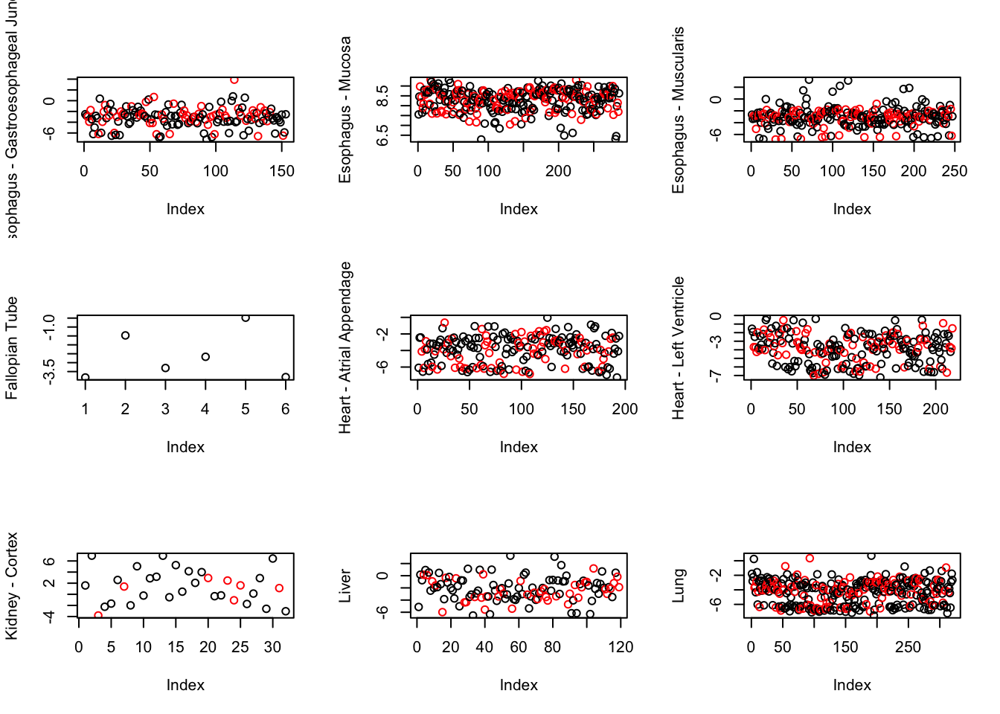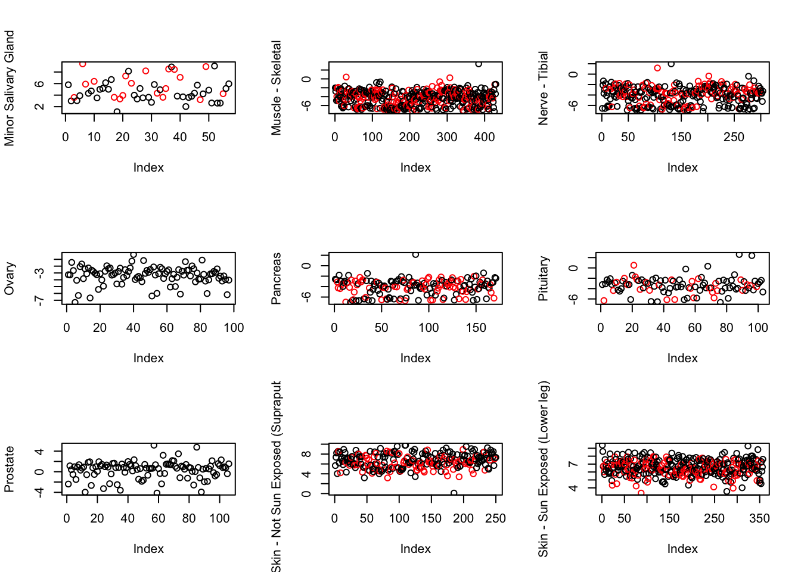
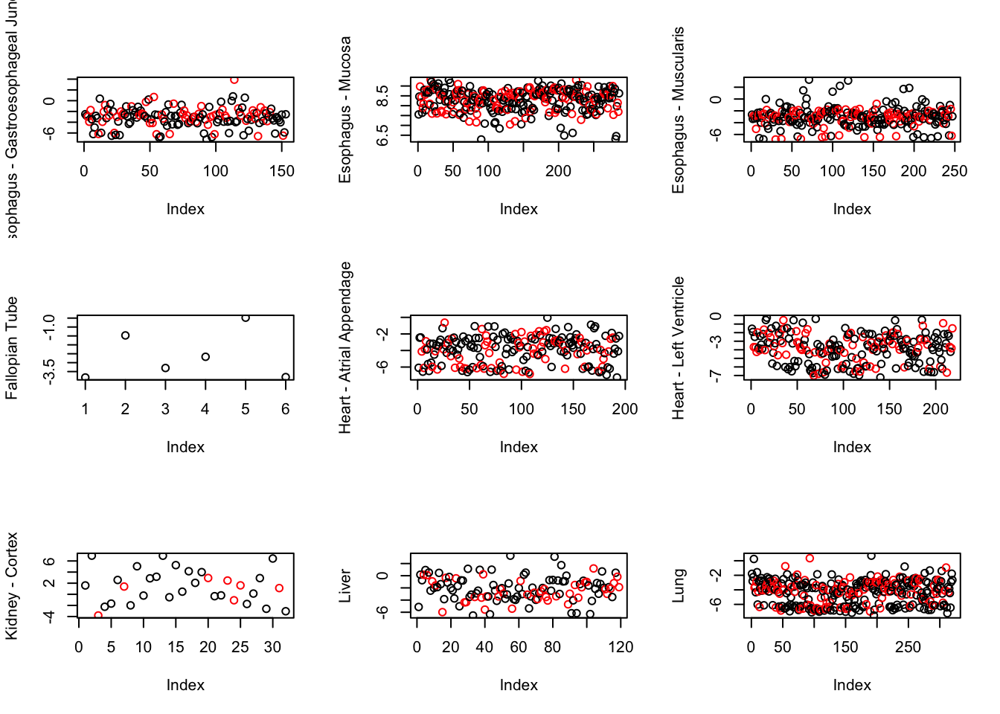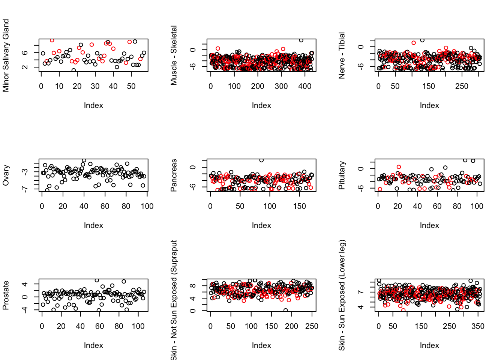 ### ENSG00000004399 (Breast specific)
### ENSG00000004399 (Breast specific)
indices <- match("ENSG00000004399", gene_names_1)par(mfrow = c(3,3))
for(j in 1:53){
ll <-lm(person_tissue_genes[,j,indices] ~ sample_attributes$SEX)
temp1 <- person_tissue_genes[,j,indices]
temp2 <- sample_attributes$SEX
temp11 <- temp1[which(!is.na(temp1))]
temp21 <- temp2[which(!is.na(temp1))]
temp1_M <- temp11[which(temp21 == 1)]
temp1_F <- temp11[which(temp21 == 2)]
plot(temp11, col=factor(temp21), ylab = dimnames(person_tissue_genes)[[2]][j])
}
 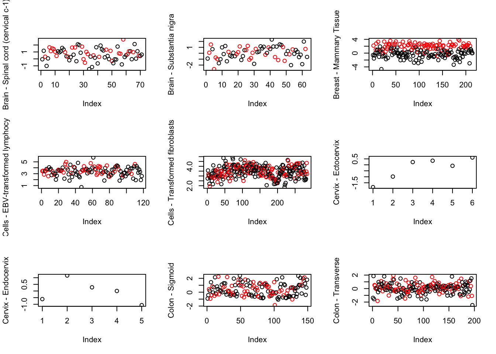
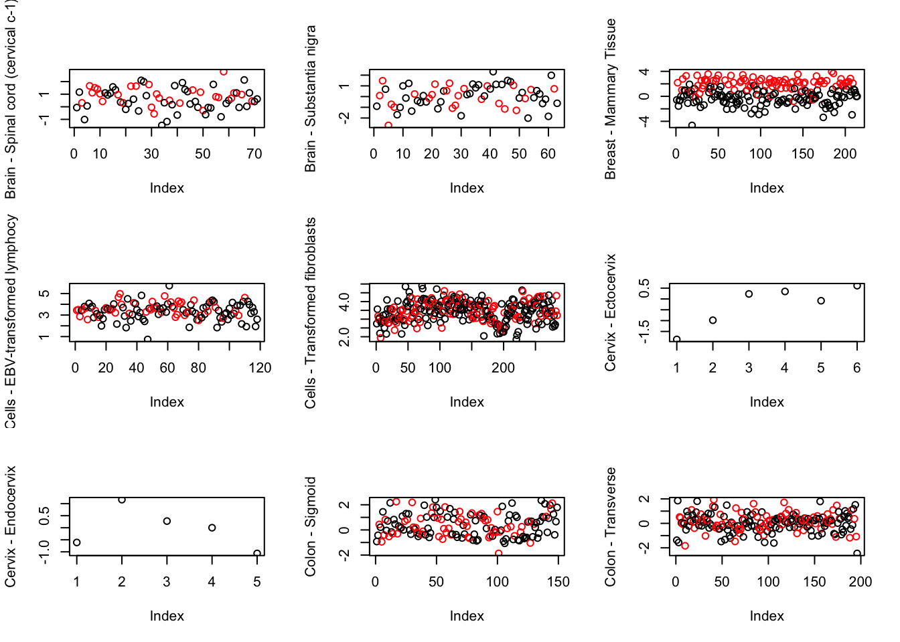


indices <- match("ENSG00000148337", gene_names_1)par(mfrow = c(3,3))
for(j in 1:53){
ll <-lm(person_tissue_genes[,j,indices] ~ sample_attributes$SEX)
temp1 <- person_tissue_genes[,j,indices]
temp2 <- sample_attributes$SEX
temp11 <- temp1[which(!is.na(temp1))]
temp21 <- temp2[which(!is.na(temp1))]
temp1_M <- temp11[which(temp21 == 1)]
temp1_F <- temp11[which(temp21 == 2)]
plot(temp11, col=factor(temp21), ylab = dimnames(person_tissue_genes)[[2]][j])
} 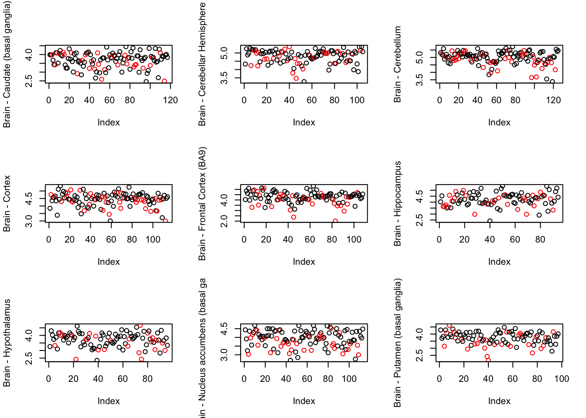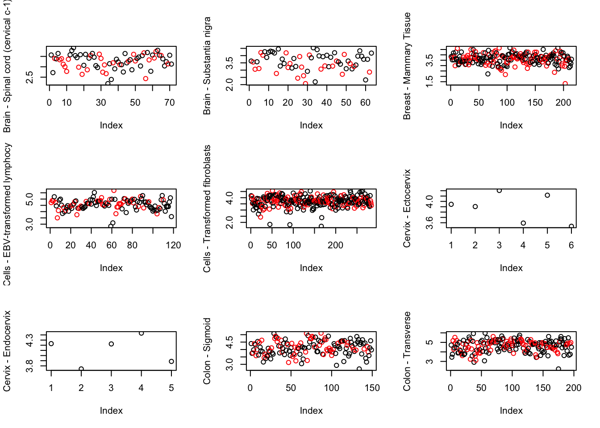
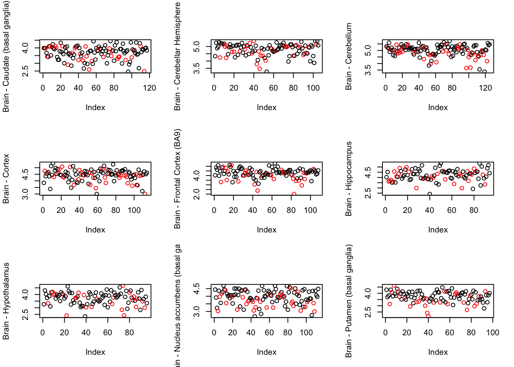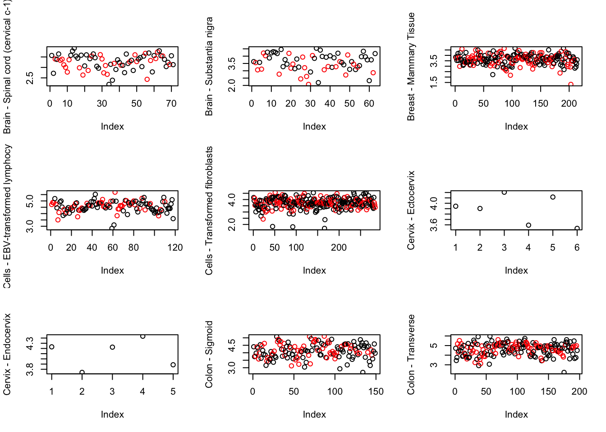


indices <- match("ENSG00000143110", gene_names_1)par(mfrow = c(3,3))
for(j in 1:53){
ll <-lm(person_tissue_genes[,j,indices] ~ sample_attributes$SEX)
temp1 <- person_tissue_genes[,j,indices]
temp2 <- sample_attributes$SEX
temp11 <- temp1[which(!is.na(temp1))]
temp21 <- temp2[which(!is.na(temp1))]
temp1_M <- temp11[which(temp21 == 1)]
temp1_F <- temp11[which(temp21 == 2)]
plot(temp11, col=factor(temp21), ylab = dimnames(person_tissue_genes)[[2]][j])
}

 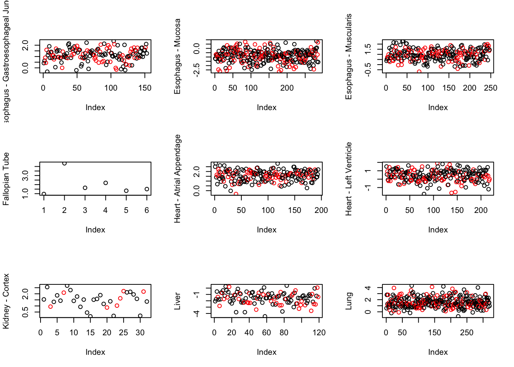
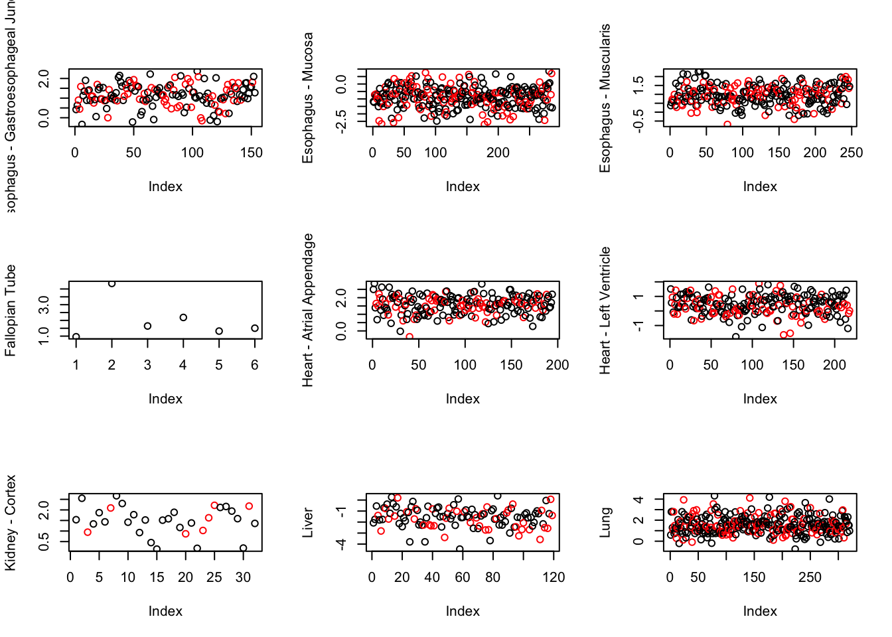
indices <- match("ENSG00000169896", gene_names_1)par(mfrow = c(3,3))
for(j in 1:53){
ll <-lm(person_tissue_genes[,j,indices] ~ sample_attributes$SEX)
temp1 <- person_tissue_genes[,j,indices]
temp2 <- sample_attributes$SEX
temp11 <- temp1[which(!is.na(temp1))]
temp21 <- temp2[which(!is.na(temp1))]
temp1_M <- temp11[which(temp21 == 1)]
temp1_F <- temp11[which(temp21 == 2)]
plot(temp11, col=factor(temp21), ylab = dimnames(person_tissue_genes)[[2]][j])
}


This R Markdown site was created with workflowr